3.4 밴디트 알고리즘 구현
밴디트 문제를 푸는 알고리즘을 코드로 구현할 차례입니다. 이론으로 공부한 밴디트 솔루션을 실제 파이썬 코드로 이식해 봅니다.
👧 도로시: “지니야! 3.3장에서 배운 증분 공식과 ε-탐욕 정책을 내 손으로 직접 파이썬 코드로 만들어보고 싶어! 어디서부터 시작하면 좋을까?”
🐱 지니: “좋은 자세야, 도로시! 강화 학습은 ‘환경(Environment)’과 ‘에이전트(Agent)’라는 두 주체가 끊임없이 대화하며 발전하는 학문이란다. 슬롯머신 10대를 담당하는
Bandit클래스와 똑똑한 플레이어인Agent클래스를 객체 지향으로 멋지게 분리해서 코딩해 보자!”🐶 토토: “멍멍! (노트북 옆에서 꼬리를 흔들며 코딩을 응원해요!)”

그림 03-4 마법 컴퓨터 스크린의 파이썬 코드 홀로그램을 보며 밴디트 알고리즘을 열심히 코딩하는 도로시와 지니
지니가 띄워준 신비한 홀로그램 스크린 코드 구조를 보며, Agent 클래스와 Bandit 클래스가 상호 연결되는 완벽한 루프의 코딩 실습을 3.4장에서 자신 있게 완수해봅시다!
3.4.1 구현조건
조건 단순화
원활한 실습을 위해서 먼저 조건을 단순화하도록 하겠습니다.
먼저, 슬롯머신이 반환하는 코인을 최대 1개로 제한합니다. 즉, 슬롯머신을 플레이하면 승리(1)와 패배(0) 중 하나를 보상으로 얻습니다.
그리고 슬롯머신에는 승리 확률(코인 1개를 내어줄 확률)이 설정되어 있다고 가정합니다.
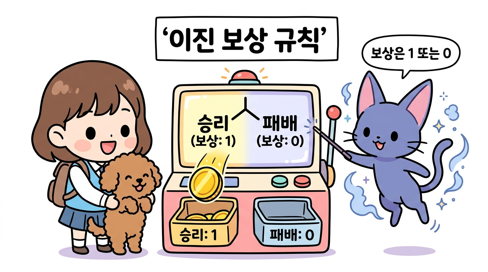
🐱 지니: “도로시, 우리는 문제를 아주 단순하고 직관적으로 만들기 위해 슬롯머신의 보상을 오직 1개(승리) 또는 0개(패배)로만 정했단다. 이것을 ‘이진 보상(Binary Reward)’ 규칙이라고 해!”
👧 도로시: “레버를 당겼을 때 코인이 1개 나오거나 아예 안 나오는 두 가지 경우밖에 없으니, 계산하기가 훨씬 명확하겠어!”
🐶 토토: “멍멍! (동전이 짤랑 나오는 모습을 보며 신나게 짖어요!)”
예를들어
승률이 0.6으로 설정되어 있다면, 60%의 확률로 코인 1개를 주고 40%의 확률로 0개를 줍니다.
그러면 슬롯머신의 가치(슬롯머신이 돌려주는 코인의 기댓값)는 0.6입니다.
\[\mathbb{E}[R] = (1 \times 0.6) + (0 \times 0.4) = 0.6\]승률이 그대로 슬롯머신의 가치가 되는 것이죠.
👧 도로시: “아하! 동전을 넣고 당겼을 때 1원 아니면 0원만 나오니까, 슬롯머신의 승률이 0.6이면 기댓값도 1 × 0.6 + 0 × 0.4 = 0.6이 되는 거구나!”
🐱 지니: “맞아! 보상이 1 또는 0인 이진 보상 환경에서는 ‘승률’ 자체가 곧 해당 기계의 ‘참 가치 q‘가 된단다. 하지만 카지노의 10대 슬롯머신 중 어느 기계의 승률이 높은지는 비밀에 싸여 있지!”

그림 3-17 밴디트 구현 조건 예시 (승리 시 1, 패배 시 0)
3.4.2 경험에 의한 슬롯머신 찾기
슬롯머신은 총 10대이고, 플레이어는 각각의 승률이 어떻게 설정되어 있는지 알 수 없습니다.
따라서 실제 플레이한 경험을 토대로 승률이 높은 슬롯머신을 찾아야 합니다.
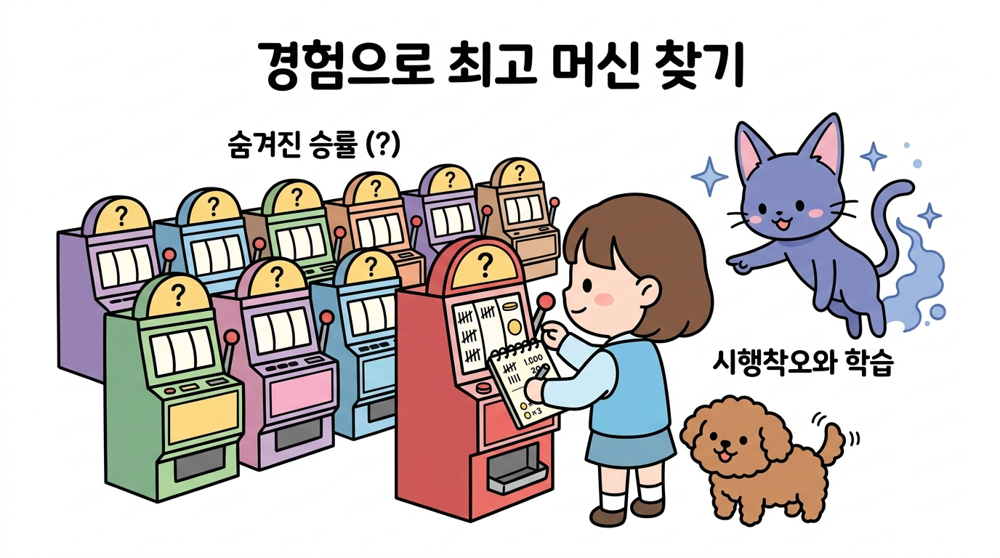
👧 도로시: “10대의 슬롯머신 중에서 어느 기계가 승률이 높은지 겉으로는 전혀 알 수가 없어! 기계마다 직접 레버를 당겨보고 결과를 기록해 봐야겠어!”
🐱 지니: “그렇지! 사전에 확률을 모르는 블랙박스 상태에서는 ‘직접 겪은 시행착오와 플레이 경험(Trial and Error)’만이 최고의 머신을 찾는 유일한 열쇠란다!”
🐶 토토: “멍멍! (노트북 옆에서 꼬리를 흔들며 응원해요!)”
다음은 에이전트(플레이어)와 밴디트(환경)가 어떻게 맞물려 돌아가는지 전체적인 학습 루프를 도식화한 그림입니다.

🐱 지니: “도로시, 강화 학습의 심장은 바로 이 ‘상호작용 루프(Interaction Loop)’란다. 에이전트가 행동을 고르면, 환경이 보상을 돌려주고, 에이전트는 그 보상을 보고 똑똑해지는 3단계 사이클이지!”
👧 도로시: “행동 선택(
get_action) → 보상 획득(play) → 가치 갱신(update)이 계속 쳇바퀴처럼 돌아가는 거네!”
행동 선택(get_action), 실제 플레이를 통한 보상 획득(play), 보상을 통한 가치 추정치 갱신(update) 순으로 이루어지는 순환적인 강화학습 과정을 거치게 됩니다.
3.4.3 슬롯머신 구현
그럼 직접 코드를 작성하여 슬롯머신을 구현해 보도록 합니다.
단, 승률은 무작위로 설정하겠습니다.
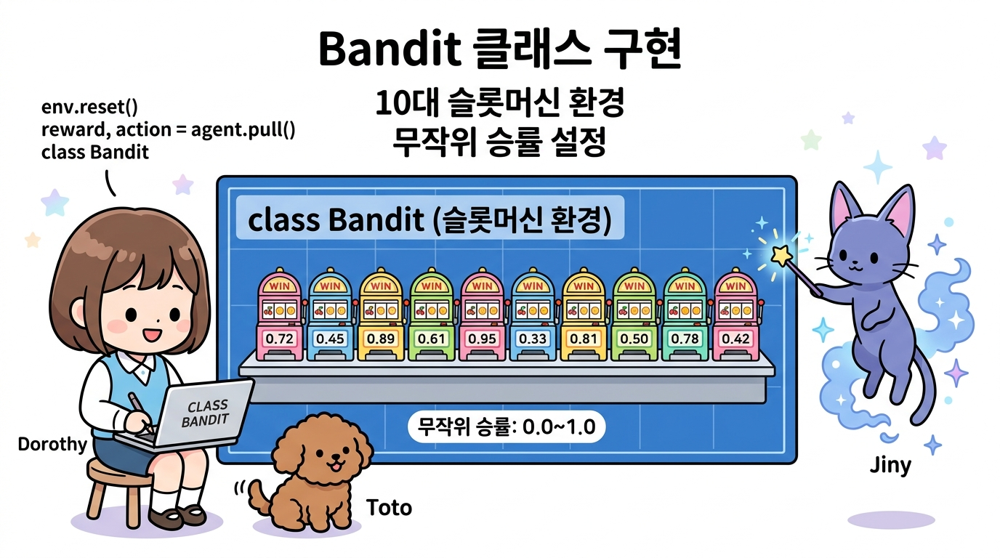
👧 도로시: “지니야! 슬롯머신 10대를 파이썬 코드로 묶으려면
Bandit이라는 클래스를 만들면 되는 거지?”🐱 지니: “맞아!
Bandit클래스 안에 10대의 슬롯머신을 담고, 각 머신의 승률을0.0부터1.0사이의 무작위 실수로 설정해 주면 완벽한 밴디트 환경이 완성된단다!”🐶 토토: “멍멍! (노트북 옆에서 도로시의 파이썬 코딩을 응원해요!)”
3.4.3.1 Bandit 클래스 구조 설계
저는 다음과 같이 Bandit 클래스 하나에 슬롯머신 10대가 존재하도록 구현했습니다.
소스 코드: bandit1.py
import numpy as np
class Bandit:
def __init__(self, arms=10): # arms = 슬롯머신 대수 (매직 메서드)
self.rates = np.random.rand(arms) # 슬롯머신 각각의 승률 설정(무작위)
def play(self, arm): # 슬롯머신 플레이 동작 메서드
rate = self.rates[arm]
if rate > np.random.rand():
return 1
else:
return 0
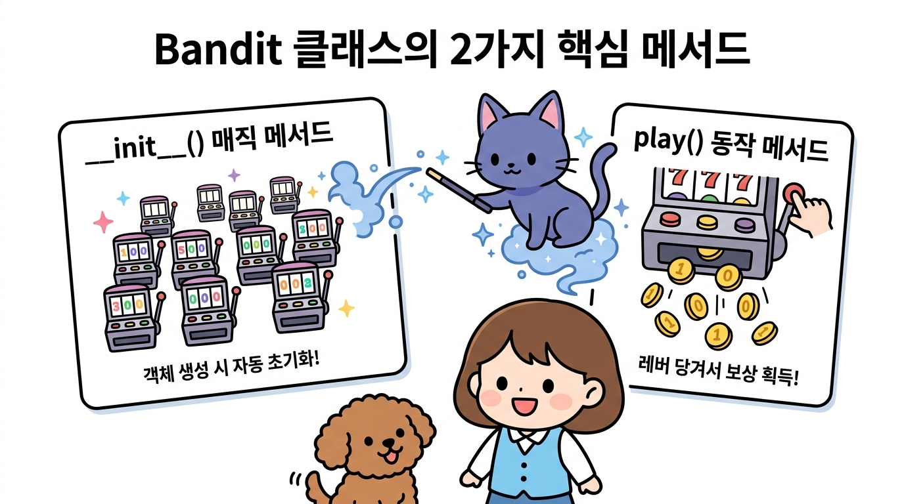
🐱 지니: “도로시,
Bandit클래스는 딱 2가지 핵심 메서드만 기억하면 돼!”
__init__()(매직 메서드): 객체를 만들 때 파이썬이 자동으로 딱 1번 실행해 주는 생성자야. 10대 슬롯머신의 비밀 승률(self.rates)을 무작위로 세팅해 둔단다.play()(동작 메서드): 레버를 당길 때마다 호출되어, 승리(1) 또는 패배(0)의 코인 보상을 돌려주는 게임 진행 메서드야!👧 도로시: “아하!
__init__은 기계 세팅,play는 레버 당기기! 그림으로 보니까 역할이 한눈에 쏙 들어와!”🐶 토토: “멍멍! (꼬리를 흔들며 신나게 공감해요!)”
3.4.3.2 무작위 승률 설정 동작 원리
1. 파이썬 매직 메서드 __init__()의 역할과 동작 원리
__init__() 메서드는 파이썬에서 매우 특별한 역할을 담당하는 매직 메서드(Magic Method / Dunder Method)입니다.
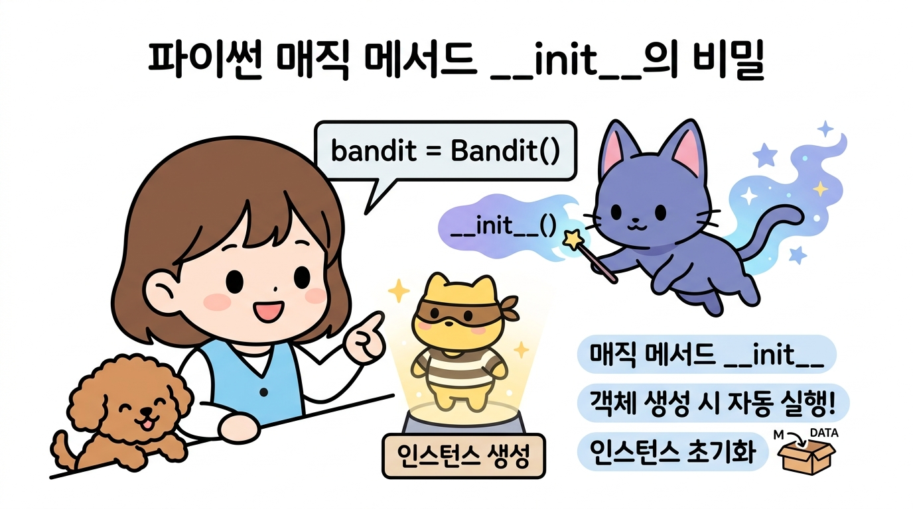
🐱 지니: “도로시, 우리가 파이썬에서
bandit = Bandit()이라고 코드를 실행하면, 백그라운드에서 파이썬이 자동으로__init__()메서드를 딱 한 번 불러준단다!”👧 도로시: “내가
bandit.__init__()이라고 직접 호출하지 않아도 자동으로 실행되는 거네? 그래서 이름이 ‘매직(Magic)’이구나!”🐱 지니: “맞아! 객체가 처음 세상에 태어날 때(인스턴스화될 때) 필요한 기억 공간을 초기화하고 기본 속성들을 세팅해 주는 아주 든든한 생성자(Constructor) 역할을 수행한단다.”
🐶 토토: “멍멍! (마법 같은 자동 실행에 감탄해요!)”
2. 매개변수 arms와 객체 생성 시 매개변수 전달 개념
__init__() 메서드에서 초기화 매개변수로 arms를 받아 들일 수 있도록 설정합니다.
arms는 ‘팔의 개수’를 의미하며 이 문제에서는 ‘슬롯머신의 대수’에 해당합니다. 기본값은 10대로 설정했습니다.
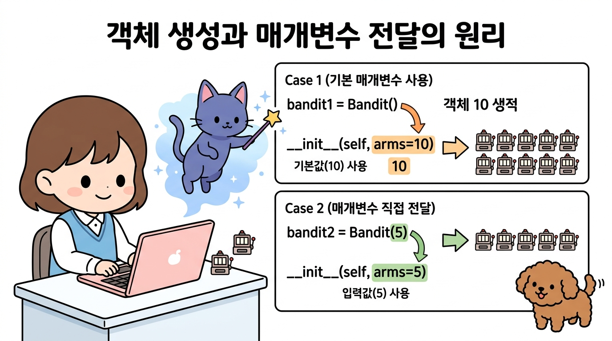
🐱 지니: “도로시,
def __init__(self, arms=10):코드에서arms=10은 ‘기본 매개변수(Default Argument)’란다!”
- 기본값 사용 (
bandit = Bandit()): 괄호 안에 아무런 값을 넣지 않으면 기본값인 10대의 슬롯머신 환경이 자동으로 생성돼.- 사용자 정의값 전달 (
bandit = Bandit(5)): 괄호 안에5를 전달하면arms에 5가 대입되어 5대의 슬롯머신 환경으로 유연하게 바뀐단다!👧 도로시: “와! 객체를 만들 때 괄호 안에 원하는 머신 대수를 넣기만 하면 내 마음대로 슬롯머신 환경의 크기를 조절할 수 있구나!”
🐶 토토: “멍멍! (유연한 객체 지향 설계에 감탄해요!)”
3. 무작위 승률 설정과 np.random.rand()
그런 다음 각 머신의 승률을 무작위로 설정합니다.
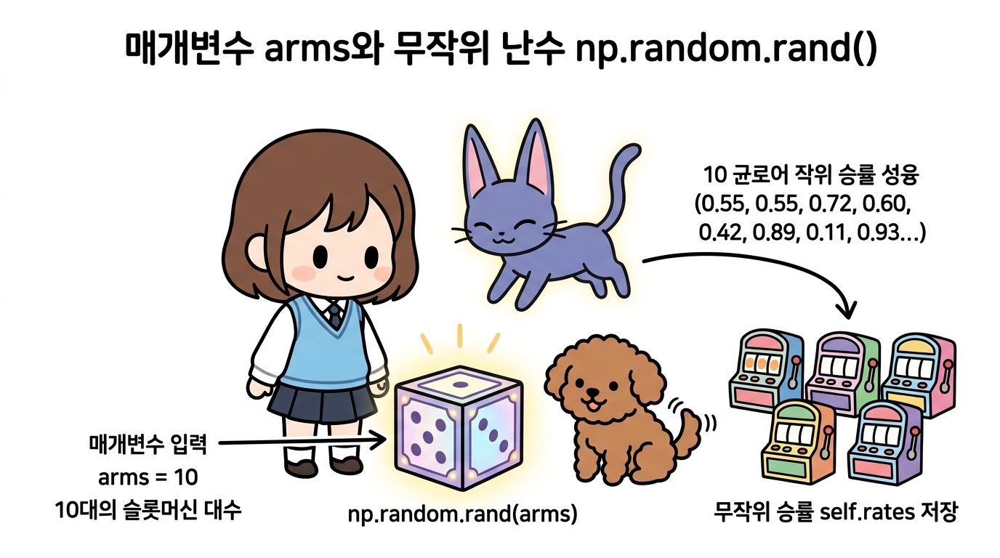
👧 도로시: “
np.random.rand(10)을 부르면 [0.55, 0.72, 0.60, …]처럼 0.0~1.0 사이의 10개 실수가 골고루 뽑혀서self.rates에 쏙 들어가는 거구나!”🐱 지니: “그렇지! 이렇게 설정된 10개의 무작위 승률은 에이전트에게는 철저히 감춰진 ‘비밀 참 가치 q‘가 되어, 본격적인 밴디트 게임의 무대를 완성한단다!”
NOTE_
np.random.rand()는 0.0 이상 1.0 미만의 무작위 수를 생성합니다. 이때 무작위 수는 균등하게 분포되도록 만들어집니다. 0.0 이상 1.0 미만 범위에서 무작위 수가 치우침 없이 골고루 생성된다는 뜻입니다. 또한np.random.rand(10)처럼 인수로 10을 넘기면 0.0 이상 1.0 미만의 무작위 수를 10개 생성합니다. 이렇게 하면 슬롯머신 10대의 승률이 각각 0에서 1 사이로 무작위로 설정됩니다.
3.4.3.3 play 메서드를 통한 보상 판단
파이썬 클래스 내부의 메서드는 크게 두 가지로 나뉩니다.
앞서 살펴본 __init__()처럼 언어 차원에서 특수 기능을 위해 기본 제공하는 매직 메서드(Magic Method)와, 개발자가 프로그램 목적에 맞게 직접 설계하여 동작시키는 사용자 정의 일반 메서드(Custom Instance Method)입니다.
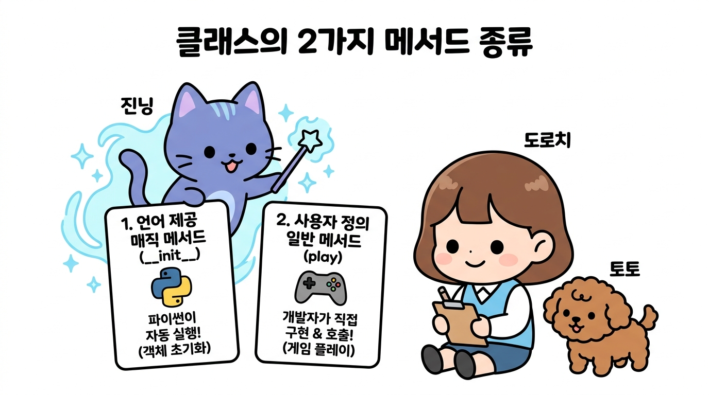
🐱 지니: “도로시, 파이썬 클래스 속 메서드는 크게 2가지로 분류할 수 있단다!”
- 언어 제공 매직 메서드 (
__init__):bandit = Bandit()처럼 객체가 생성될 때 파이썬이 알아서 자동으로 호출해 주는 메서드야.- 사용자 정의 일반 메서드 (
play): 슬롯머신 레버를 당기기 위해 우리가 직접 이름을 짓고 구현하여 필요할 때마다 직접 호출하는 메서드란다!👧 도로시: “아하!
__init__은 파이썬이 알아서 실행해 주는 매직이고,play는 내가 게임할 때마다 직접 부르는 나만의 일반 메서드구나!”🐶 토토: “멍멍! (명쾌한 구분에 꼬리를 흔들어요!)”
1. play() 메서드의 3단계 코드 실행 원리
그럼 우리가 작성한 play(self, arm) 메서드의 소스코드를 한 줄씩 단계적으로 살펴봅시다.
def play(self, arm):
rate = self.rates[arm]
if rate > np.random.rand():
return 1
else:
return 0
play() 메서드는 다음의 3단계 과정을 거쳐 보상을 계산하고 반환합니다.
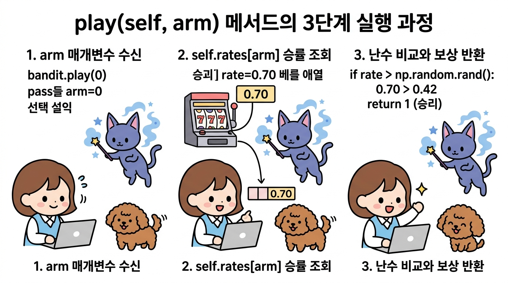
- 1단계:
arm매개변수로 플레이할 슬롯머신 지정받기def play(self, arm):- 매개변수
arm은 몇 번째 팔(슬롯머신)을 플레이할지를 지정합니다. 예를 들어bandit.play(0)을 호출하면arm = 0이 전달되어 0번째 슬롯머신을 선택합니다.
- 2단계:
self.rates[arm]에서 해당 슬롯머신의 승률 읽어오기rate = self.rates[arm]__init__에서 미리 생성해 둔 10대 슬롯머신의 승률 배열self.rates에서arm번째 머신의 실제 승률(예: 0.70)을 가져와rate변수에 저장합니다.
- 3단계: 무작위 난수 생성 및 조건문 비교를 통한 보상 반환
if rate > np.random.rand(): return 1 else: return 0np.random.rand()로 0.0~1.0 미만의 무작위 수를 하나 생성합니다. 이 무작위 수와arm번째 슬롯머신의 승률을 비교하여, 승률이 무작위 수보다 크면 보상으로 1(승리)을 반환하고 그렇지 않으면 0(패배)을 반환합니다.
🐱 지니: “도로시, 코드 세 줄이 각각 ‘어떤 머신을(arm)’, ‘그 머신의 승률을 꺼내서(rate)’, ‘난수 주사위와 겨뤄서 보상을 돌려주는(if-else)’ 3단계로 완벽히 맞아떨어지지?”
👧 도로시: “와! 코드를 한 줄씩 뜯어보니까
play()함수가 어떻게 확률대로 코인을 주는지 정말 명확하게 이해돼!”🐶 토토: “멍멍! (코드가 너무 쉬워졌어요!)”
2. 확률적 판정의 수직선 원리
그림 3-18 play 메서드의 확률적 보상 판단 원리

🐱 지니: “도로시, 왜
rate > np.random.rand()조건문이 정확히 승률만큼의 확률을 만들어낼까?”👧 도로시: “0.0부터 1.0까지 균등한 수직선에서 난수를 뽑았을 때, 난수가
0.7보다 작게 떨어질 확률은 정확히 70%니까 그렇구나! 70% 구간에 들어오면 코인 1개를 획득하는 거지!”🐶 토토: “멍! (똑똑한 설명에 감탄해요!)”
3.4.3.4 단일 슬롯머신 테스트 실행
이제 앞서 bandit1.py에서 구현한 Bandit 클래스를 이용하여 슬롯머신을 직접 실행해 보도록 하겠습니다. 그러기 위해서는 실습 코드를 추가로 작성해 주어야 합니다.
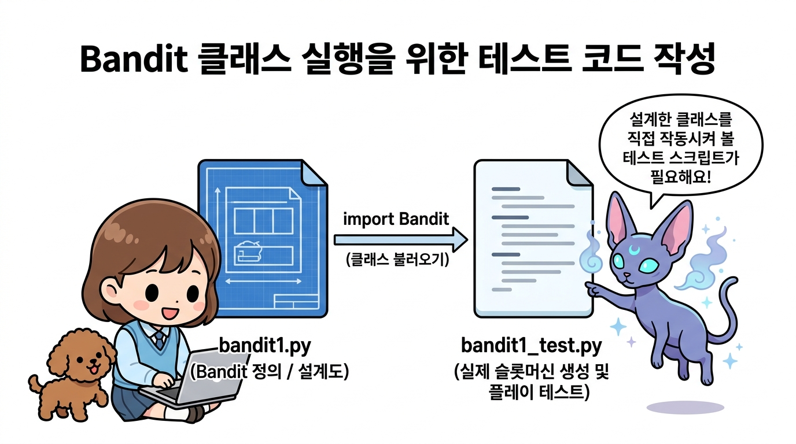
독립적으로 실행하고 테스트해 볼 수 있는 테스트 스크립트 코드는 다음과 같습니다.
Bandit1의 코드를 가지고 와서 객체를 생성하고, 이를 실행합니다.
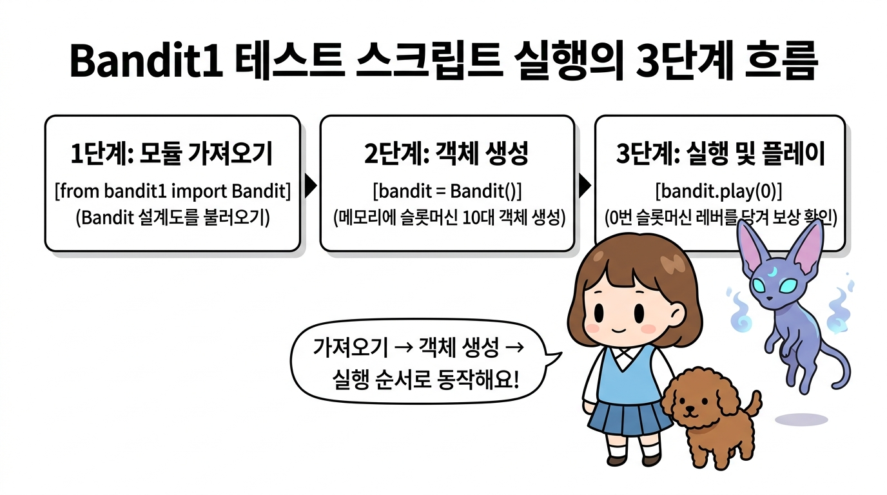
소스 코드: bandit1_test.py
from bandit1 import Bandit
# 1. 10대 슬롯머신 환경 객체 생성
bandit = Bandit()
# 2. 0번째 슬롯머신(arm=0)을 3회 연속으로 플레이
for i in range(3):
print(bandit.play(0))
출력 결과
1
0
0
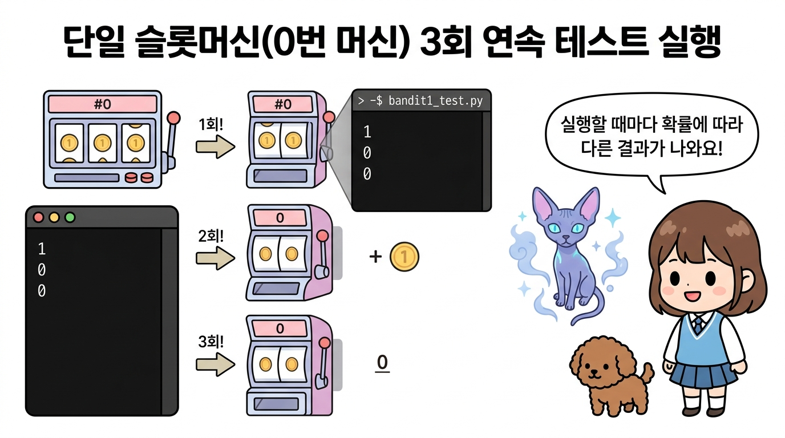
0번째 슬롯머신을 3회 연속으로 플레이하여 얻은 코인 개수를 출력했습니다(출력 결과는 실행할 때마다 달라집니다).
코드 실행 과정 살펴보기
bandit = Bandit(): 슬롯머신 10대를 가진 카지노 환경 객체를 만듭니다. 이때__init__()매직 메서드가 자동 호출되어 10대 머신 각각의 무작위 실제 승률(self.rates)이 은밀히 배정됩니다.bandit.play(0): 0번째 슬롯머신의 레버를 당깁니다.play()메서드 내부에서 0번 머신의 실제 승률과 새롭게 뽑은 난수를 비교하여 이기면1(코인 획득), 지면0(꽝)을 반환합니다.for i in range(3):: 0번째 슬롯머신을 3번 연속으로 당겨 각각의 보상 결과를 터미널 화면에 출력합니다.
🐱 지니: “도로시, 화면에 출력된
1, 0, 0은 슬롯머신을 실행할 때마다 매번 다르게 나올 수 있단다!”👧 도로시: “맞아! 슬롯머신의 승률이 70%로 고정되어 있더라도, 레버를 당길 때마다 무작위 난수 주사위를 굴리기 때문에 어떤 날은
1, 1, 1이 나올 수도 있고 어떤 날은0, 0, 1이 나올 수도 있는 거지!”🐶 토토: “멍멍! (확률 게임의 짜릿함이 그대로 느껴져요!)”
이상으로 슬롯머신 구현이 끝났습니다.
3.4.4 에이전트 구현
이번에는 에이전트(플레이어)를 만들어볼 차례입니다.
앞서 구현한 Bandit 클래스가 카지노의 환경(Environment, 슬롯머신들)이었다면, 이제 이 환경과 상호작용하며 최선의 보상을 획득하기 위해 스스로 판단하고 학습하는 주체인 에이전트(Agent, 플레이어)를 구현해야 합니다.
3.4.2절에서 표본 평균을 구하는 효율적인 구현 방법, 즉 증분 구현을 배웠습니다. 에이전트는 레버를 당기는 행동(Action)을 하고, 그 결과로 얻은 보상(Reward)을 바탕으로 각 슬롯머신의 가치 추정치(Q)를 메모리 낭비 없이 실시간으로 갱신해 나갑니다.
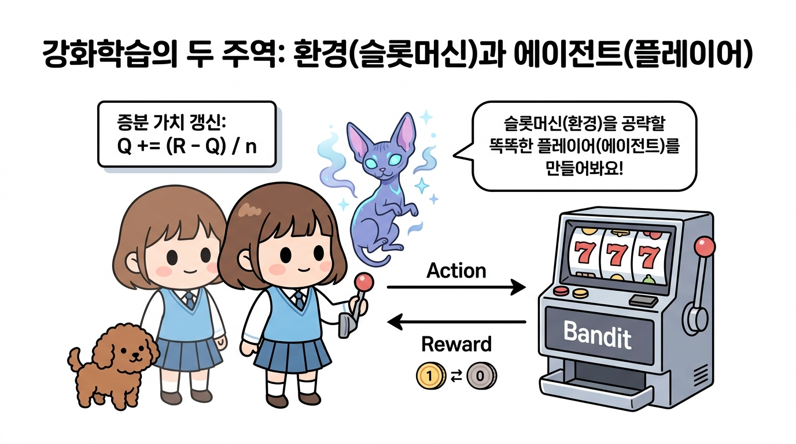
🐱 지니: “도로시, 앞서 만든
Bandit이 슬롯머신 ‘환경’이었다면, 이제 그 환경을 공략하여 가장 돈을 많이 주는 최고의 슬롯머신을 찾아내는 똑똑한 플레이어인 ‘에이전트(Agent)’를 만들 차례란다!”👧 도로시: “아하! 에이전트는 우리가 앞서 배운 ‘ε-탐욕 정책’으로 머신을 고르고, 결과가 나오면 ‘증분 갱신 공식’으로 각 머신의 가치를 기억하고 업데이트하는 거구나!”
🐶 토토: “멍멍! (에이전트의 멋진 활약이 기대돼요!)”
3.4.4.1 단일 슬롯머신 가치 추정 복습
이번 절에서는 복습도 할 겸 0번째 슬롯머신에만 집중하여 해당 슬롯머신의 가치를 추정해보겠습니다.
앞서 3.4.2절에서 유도한 증분 갱신(Incremental Update) 수식은 다음과 같습니다.
\[Q_n = Q_{n-1} + \frac{1}{n} (R_n - Q_{n-1})\]이 복잡해 보이는 수학 수식을 파이썬 코드로 변환하면 놀랍게도 단 한 줄인 Q += (reward - Q) / n이 됩니다.
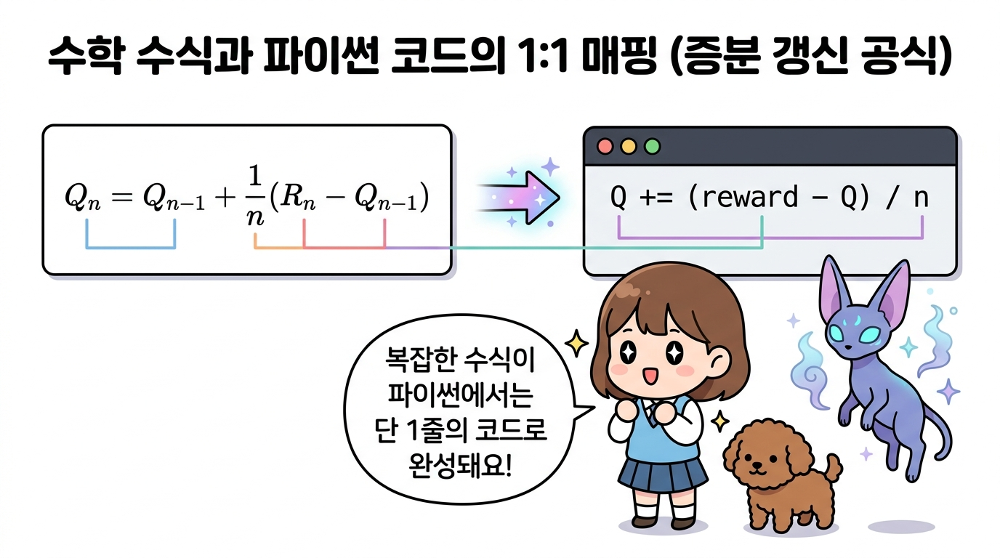
🐱 지니: “도로시, 수학 공식에서 좌변의 새로운 가치 Qn과 우변의 이전 가치 Qn-1이 파이썬에서는 복합 대입 연산자
+=하나로 깔끔하게 합쳐진단다!”👧 도로시: “와! 1/n은
/ n이 되고, 오차 항인 (Rn - Qn-1)은(reward - Q)로 1:1 매핑되니까 수학 공식보다 파이썬 코드가 훨씬 직관적이고 쉬워 보여!”🐶 토토: “멍멍! (코드가 너무 간결해서 한눈에 쏙 들어와요!)”
직접 실행하고 동작을 확인해 볼 수 있는 파이썬 예제 코드는 다음과 같습니다.
소스 코드: bandit_single_val.py
from bandit1 import Bandit
bandit = Bandit()
Q = 0 # 0번째 슬롯머신의 가치 추정치 초기화
for n in range(1, 11): # 10번 반복 (n = 1, 2, ..., 10)
reward = bandit.play(0) # 0번째 슬롯머신 플레이
Q += (reward - Q) / n # 증분 방식으로 가치 추정치 갱신
print(f"{n:2d}번째 시도 | 보상: {reward} | 갱신된 가치 추정치 Q: {Q:.4f}")
출력 결과 (예시)
1번째 시도 | 보상: 0 | 갱신된 가치 추정치 Q: 0.0000
2번째 시도 | 보상: 1 | 갱신된 가치 추정치 Q: 0.5000
3번째 시도 | 보상: 1 | 갱신된 가치 추정치 Q: 0.6667
4번째 시도 | 보상: 1 | 갱신된 가치 추정치 Q: 0.7500
5번째 시도 | 보상: 0 | 갱신된 가치 추정치 Q: 0.6000
6번째 시도 | 보상: 0 | 갱신된 가치 추정치 Q: 0.5000
7번째 시도 | 보상: 0 | 갱신된 가치 추정치 Q: 0.4286
8번째 시도 | 보상: 0 | 갱신된 가치 추정치 Q: 0.3750
9번째 시도 | 보상: 0 | 갱신된 가치 추정치 Q: 0.3333
10번째 시도 | 보상: 0 | 갱신된 가치 추정치 Q: 0.3000
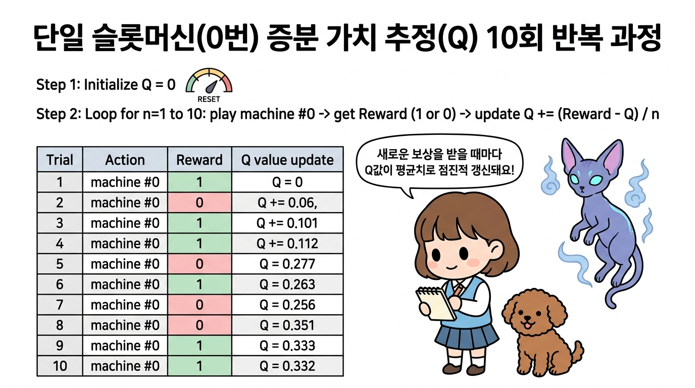
이 코드는 0번째 슬롯머신을 10번 연속으로 플레이하고 보상을 받을 때마다 슬롯머신의 가치 추정치를 갱신합니다.
코드 동작 단계별 상세 분석
- 가치 추정치 초기화 (
Q = 0): 슬롯머신에 대한 사전 정보가 전혀 없으므로 초기 가치 추정치를0으로 설정합니다. - 슬롯머신 플레이 및 보상 관측 (
reward = bandit.play(0)): 0번 머신을 당겨 코인을 얻으면1, 얻지 못하면0을 받습니다. - 증분 가치 갱신 (
Q += (reward - Q) / n): 앞서 유도했던 증분 공식인 Qn = Qn-1 + (1 / n)(Rn - Qn-1)을 코드로 그대로 구현한 것입니다. 매 시행마다 오차(reward - Q)를 시행 횟수n으로 나누어 기존Q에 누적 더함으로써, 과거의 모든 보상 기록을 배열에 일일이 저장하지 않고도 정확한 표본 평균을 실시간으로 계산합니다.
🐱 지니: “도로시,
Q += (reward - Q) / n한 줄이 실행될 때마다Q가 과거 모든 보상의 평균값으로 정확히 계산되는 마법을 눈으로 확인했지?”👧 도로시: “응! 1회부터 10회까지 보상이 들어올 때마다
Q값이 부드럽게 조정되면서 0번 머신의 평균 승률에 점점 가까워지는 게 보여!”🐶 토토: “멍멍! (과거 데이터를 다 저장하지 않아도 돼서 메모리가 아주 가벼워요!)”
여기까지가 지난 절의 복습입니다.
3.4.4.2 전체 슬롯머신(10대) 가치 추정 확장
이제 10대의 슬롯머신 각각의 가치 추정치를 구해보겠습니다.
앞선 절에서는 0번째 슬롯머신 1대만을 대상으로 단일 변수 Q와 n을 사용했지만, 이제는 10대의 슬롯머신 전체를 다루어야 합니다.
따라서 각 머신의 가치와 플레이 횟수를 개별적으로 관리할 수 있도록 1차원 넘파이 배열로 확장합니다.
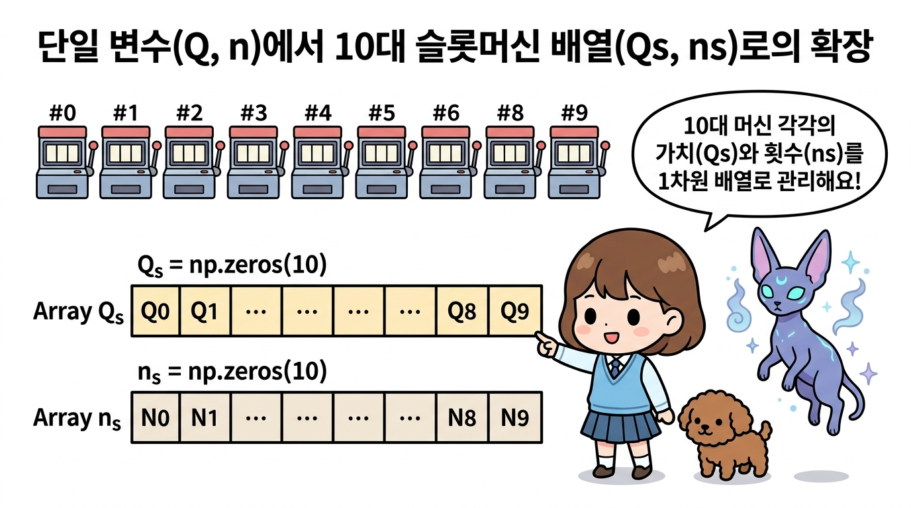
10대의 슬롯머신 각각에 대해 무작위로 레버를 당기며 가치 추정치를 갱신하는 전체 실습 코드는 다음과 같습니다.
소스 코드: bandit_multi_val.py
import numpy as np
from bandit1 import Bandit
# 1. 10대 슬롯머신 환경 객체 생성
bandit = Bandit()
# 2. 10대 머신의 가치 추정치(Qs)와 플레이 횟수(ns)를 0으로 초기화
Qs = np.zeros(10) # 각 슬롯머신의 가치 추정치 배열 (1차원 배열)
ns = np.zeros(10) # 각 슬롯머신의 플레이 횟수 기록 배열
# 3. 10번 동안 무작위로 슬롯머신을 골라 플레이하고 증분 갱신
for n in range(10):
action = np.random.randint(0, 10) # 무작위 행동 (0~9번 머신 중 임의 선택)
reward = bandit.play(action) # 선택된 슬롯머신 플레이
ns[action] += 1 # action번째 슬롯머신의 누적 플레이 횟수 증가
# action번째 슬롯머신의 가치 추정치만 증분 갱신
Qs[action] += (reward - Qs[action]) / ns[action]
print(f"시행 {n+1:2d}회 | 선택 머신: #{action} | 보상: {reward} -> Qs: {np.round(Qs, 2)}")
출력 결과 (예시)
시행 1회 | 선택 머신: #9 | 보상: 0 -> Qs: [0. 0. 0. 0. 0. 0. 0. 0. 0. 0.]
시행 2회 | 선택 머신: #0 | 보상: 1 -> Qs: [1. 0. 0. 0. 0. 0. 0. 0. 0. 0.]
시행 3회 | 선택 머신: #7 | 보상: 0 -> Qs: [1. 0. 0. 0. 0. 0. 0. 0. 0. 0.]
시행 4회 | 선택 머신: #9 | 보상: 0 -> Qs: [1. 0. 0. 0. 0. 0. 0. 0. 0. 0.]
시행 5회 | 선택 머신: #6 | 보상: 1 -> Qs: [1. 0. 0. 0. 0. 0. 1. 0. 0. 0.]
시행 6회 | 선택 머신: #4 | 보상: 1 -> Qs: [1. 0. 0. 0. 1. 0. 1. 0. 0. 0.]
시행 7회 | 선택 머신: #4 | 보상: 1 -> Qs: [1. 0. 0. 0. 1. 0. 1. 0. 0. 0.]
시행 8회 | 선택 머신: #1 | 보상: 0 -> Qs: [1. 0. 0. 0. 1. 0. 1. 0. 0. 0.]
시행 9회 | 선택 머신: #1 | 보상: 1 -> Qs: [1. 0.5 0. 0. 1. 0. 1. 0. 0. 0. ]
시행 10회 | 선택 머신: #1 | 보상: 1 -> Qs: [1. 0.67 0. 0. 1. 0. 1. 0. 0. 0. ]
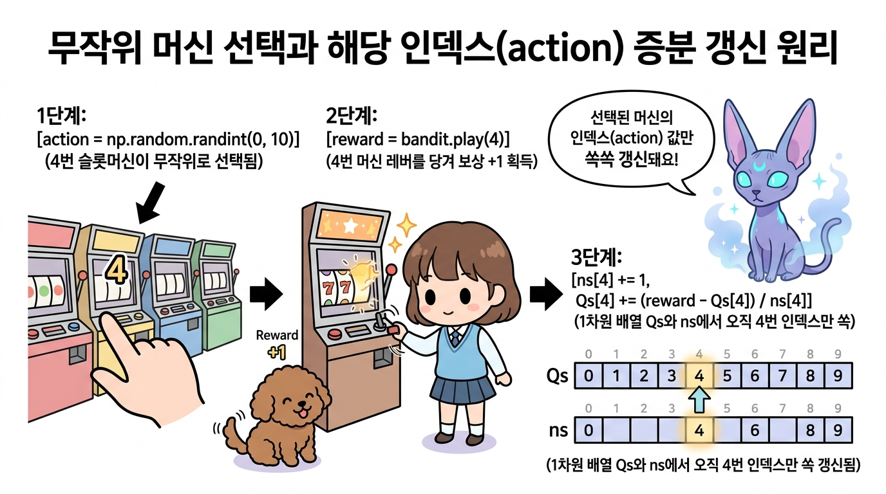
이번에는 원소 10개짜리 1차원 배열인 Qs와 ns 변수를 새롭게 준비했습니다(np.zeros() 함수로 원소를 모두 0으로 초기화).
그리고 ns의 각 원소에는 해당 슬롯머신을 플레이한 횟수를 저장합니다. 이렇게 하여 슬롯머신 각각의 가치를 추정할 수 있습니다.
코드 동작 원리 상세 분석
Qs = np.zeros(10)&ns = np.zeros(10): 슬롯머신이 10대이므로 크기 10인 배열 2개를 준비하여 모든 슬롯머신의 초기 가치 추정치와 플레이 횟수를0.0과0으로 설정합니다.action = np.random.randint(0, 10): 0 이상 10 미만(0~9)의 정수 난수를 하나 뽑아 이번에 플레이할 슬롯머신 번호(action)를 정합니다.ns[action] += 1: 선택된 슬롯머신의 플레이 횟수만 1 증가시킵니다.Qs[action] += (reward - Qs[action]) / ns[action]: 인덱스 슬라이싱([action])을 활용하여 선택된 슬롯머신의 가치 추정치만 핀포인트로 증분 갱신합니다. 선택되지 않은 나머지 9개 슬롯머신의 값은 그대로 보존됩니다.
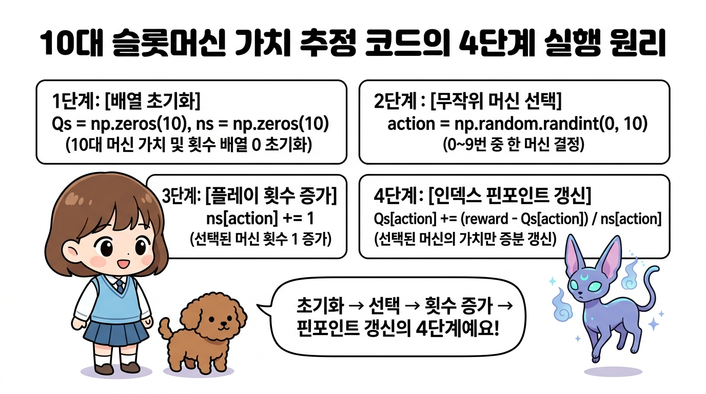
🐱 지니: “도로시,
[action]인덱스를 사용하니까 10대의 슬롯머신 중 내가 실제로 당긴 머신의 가치와 횟수만 쏙쏙 골라서 갱신할 수 있지?”👧 도로시: “맞아! 단일 머신일 때의 수식
Q += (reward - Q) / n에서Q와n뒤에[action]만 붙여주니 10대 머신 전체로 손쉽게 확장되는구나!”🐶 토토: “멍멍! (배열 인덱스를 활용하니 코드가 정말 깔끔해요!)”
3.4.4.3 Agent 클래스 설계 및 구현
1. 에이전트 클래스(Agent Class)와 밴디트(Bandit)의 상호작용 관계
지금까지 익힌 지식을 활용하여 Agent 클래스를 구현하겠습니다.
앞서 구현한 Bandit 클래스가 카지노의 환경(Environment)이었다면, 이제 새롭게 구현할 Agent 클래스는 그 환경 안에서 플레이하는 플레이어(Player)에 해당합니다.
두 클래스는 다음과 같은 순환적인 상호작용 루프(Interaction Loop)를 통해 끊임없이 소통합니다.
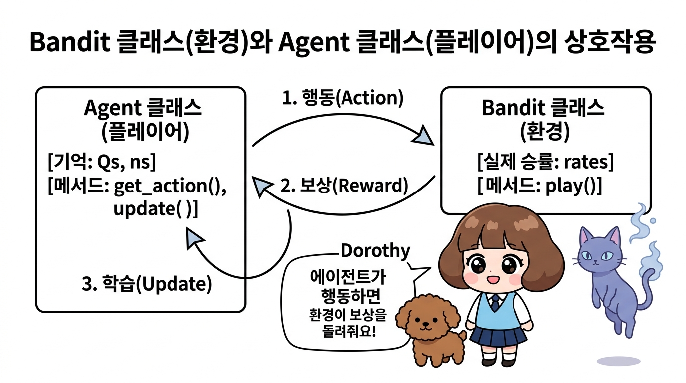
- 행동 선택(Action):
Agent가 ε-탐욕 정책(get_action())에 따라 10대 슬롯머신 중 하나를 선택하여Bandit에게 전달합니다. - 보상 반환(Reward):
Bandit은 선택된 슬롯머신의 실제 승률에 따라 레버를 동작시키고(play(action)), 결과 보상(1또는0)을Agent에게 돌려줍니다. - 경험 학습(Update):
Agent는 돌려받은 보상을 바탕으로 자신의 내부 기억(Qs[action])을 증분 공식으로 최신화(update(action, reward))합니다.
🐱 지니: “도로시,
Bandit이 문제를 내는 ‘출제자(환경)’라면,Agent는 문제를 풀고 경험을 쌓아가는 ‘응시자(학습자)’라고 볼 수 있단다!”👧 도로시: “아하!
Agent가 레버를 고르면Bandit이 코인을 주고, 그 코인을 보고Agent가 머신별 점수표를 업데이트하면서 점점 똑똑해지는 거구나!”🐶 토토: “멍멍! (둘이 쿵짝이 잘 맞는 찰떡궁합이에요!)”
2. Agent 클래스의 내부 구조와 ε-탐욕 정책
Agent 클래스는 ε-탐욕 정책을 따라 행동을 선택하도록 할 것입니다.
Agent 클래스는 크게 3가지 기억 속성과 2가지 핵심 동작 메서드로 구성됩니다.
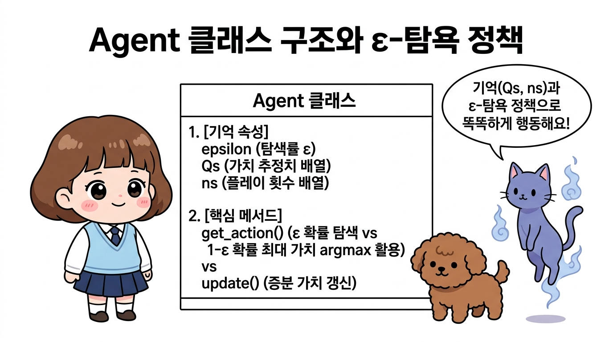
- 기억 속성 (Memory Attributes):
self.epsilon: 무작위로 새로운 슬롯머신을 탐색(Exploration)할 확률 ε입니다.self.Qs: 10대 슬롯머신 각각의 가치 추정치 배열(np.zeros(action_size))로, 플레이어가 각 머신에 대해 파악하고 있는 현재 기대 보상입니다.self.ns: 10대 슬롯머신 각각의 누적 플레이 횟수 배열(np.zeros(action_size))로, 증분 갱신 공식의 분모(단계 크기 1/n)로 활용됩니다.
- 핵심 메서드 (Core Methods):
get_action(): ε-탐욕 정책을 통해 행동을 결정합니다. ε 확률로 무작위 슬롯머신을 고르고(탐색), 1 - ε 확률로는 현재까지의 가치 추정치Qs중 최댓값을 가진 머신(np.argmax(Qs))을 선택(활용)합니다.update(action, reward): 선택한 슬롯머신(action)과 그 결과로 얻은 보상(reward)을 전달받아ns횟수를 늘리고Qs가치 추정치를 증분 공식으로 갱신합니다.
🐱 지니: “도로시,
Agent클래스는 두 개의 기억 장치(Qs,ns)와 두 개의 핵심 뇌(get_action,update)를 가지고 있단다. 기억 장치는 지금까지 얻은 경험을 저장하고, 뇌는 ε-탐욕 정책으로 행동을 결정하고 새 보상을 학습하지!”👧 도로시: “와! ε 확률로 가끔 엉뚱한 머신도 탐색해 보고, 평소에는 제일 잘 나오는 머신을 공략하는 똑똑한 에이전트 설계도구나!”
🐶 토토: “멍멍! (객체 지향으로 묶으니 구조가 한눈에 쏙 들어와요!)”
소스 코드: agent.py
import numpy as np
class Agent:
def __init__(self, epsilon, action_size=10):
self.epsilon = epsilon # 무작위로 행동할 확률 (탐색 확률 ε)
self.Qs = np.zeros(action_size) # 각 슬롯머신의 가치 추정치 배열 (초기값: 모두 0.0)
self.ns = np.zeros(action_size) # 각 슬롯머신의 누적 플레이 횟수 배열 (초기값: 모두 0)
def update(self, action, reward):
# 1. action번째 슬롯머신의 플레이 횟수 1 증가
self.ns[action] += 1
# 2. 증분 공식으로 action번째 슬롯머신의 가치 추정치 갱신
self.Qs[action] += (reward - self.Qs[action]) / self.ns[action]
def get_action(self):
# 1. ε의 확률로 무작위 탐색 (새로운 슬롯머신 시도)
if np.random.rand() < self.epsilon:
return np.random.randint(0, len(self.Qs))
# 2. (1 - ε)의 확률로 탐욕적 활용 (현재 최고 가치 추정 머신 선택)
return np.argmax(self.Qs)
3.4.4.4 Agent 3가지 핵심 메서드 동작 원리
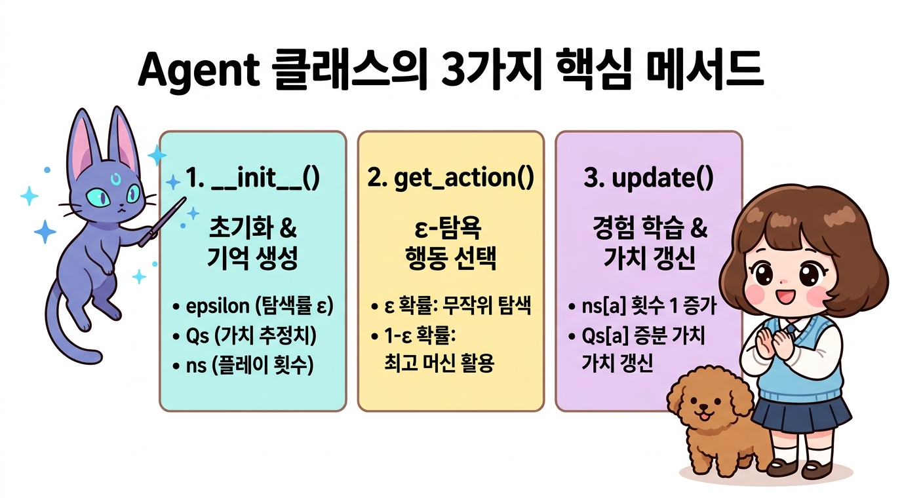
Agent 클래스는 강화학습의 3대 핵심 역할(기억 생성, 행동 결정, 경험 학습)을 담당하는 3개의 메서드로 구성되어 있습니다.
1. __init__(self, epsilon, action_size=10): 초기화 및 기억 장치 설정
self.epsilon: ε-탐욕 정책에 따라 무작위로 행동할 확률(탐색률 ε)입니다. 예를 들어epsilon=0.1이면 10%의 확률로 새로운 슬롯머신을 탐색합니다.action_size: 에이전트가 선택할 수 있는 행동의 총 개수입니다. 여기서는 슬롯머신의 대수(10대)를 뜻합니다.self.Qs: 10대 슬롯머신의 가치 추정치를 저장하는 1차원 배열(np.zeros(action_size))로, 초기값은 모두0.0입니다.self.ns: 10대 슬롯머신의 누적 플레이 횟수를 저장하는 1차원 배열(np.zeros(action_size))로, 초기값은 모두0입니다.
2. get_action(self): ε-탐욕 정책 기반 행동 선택
- 탐색(Exploration, ε 확률):
np.random.rand() < self.epsilon조건이 참이면np.random.randint(0, len(self.Qs))를 통해 10대의 머신 중 하나를 무작위로 골라 새로운 기회를 모색합니다. - 활용(Exploitation, 1 - ε 확률): 조건이 거짓이면
np.argmax(self.Qs)를 실행하여 지금까지 추정한 가치(self.Qs)가 가장 큰 머신의 번호(인덱스)를 선택합니다.
3. update(self, action, reward): 경험 학습 및 증분 가치 갱신
- 시행 횟수 증가:
self.ns[action] += 1로 플레이한 머신의 플레이 횟수를 1 늘립니다. - 가치 추정치 갱신: 증분 공식에 따라 오차(
reward - self.Qs[action])를 횟수(self.ns[action])로 나누어 기존 가치self.Qs[action]에 더해 갱신합니다.
🐱 지니: “
__init__으로 기억 장치를 만들고,get_action으로 행동을 결정하고,update로 경험을 학습하는 이 3단계 사이클이 바로 인공지능 에이전트의 완전한 뇌 구조란다!”👧 도로시: “와! 3개의 메서드가 각자 자기 역할을 맡아서 [기억 -> 행동 -> 학습]으로 물 흐르듯 이어지니까 코드가 훨씬 이해하기 쉬워요!”
🐶 토토: “멍멍! (3가지 메서드가 한눈에 쏙 들어와요!)”
여기까지가 Agent 클래스를 구현하는 방법입니다.
3.4.5 실행해보기
이제 Bandit 클래스와 Agent 클래스를 이용하여 행동을 취해봅시다.
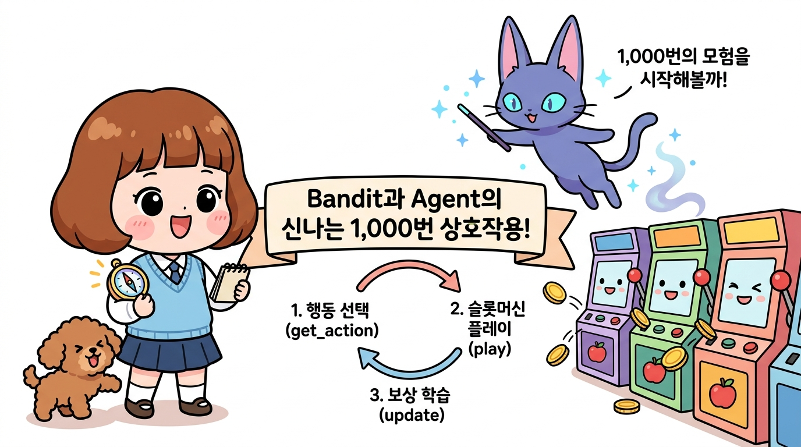
🐱 지니: “도로시, 환경인
Bandit과 똑똑한 학습자Agent가 드디어 모두 준비되었단다! 이제 두 객체를 연결해 1,000번의 상호작용 모험을 돌려볼 시간이야!”👧 도로시: “와! 에이전트가 행동(
get_action)을 선택하면 슬롯머신이 보상(play)을 주고, 그 결과를 보고 가치 지도를 갱신(update)하는 3단계 루프가 1,000번 반복되는 거군요!”🐶 토토: “멍멍! (1,000번 동안 얼마나 많은 보상을 얻을 수 있을지 두근거려요!)”
3.4.5.1 상호작용 루프 구현 및 실행
행동을 1000번 수행하여 보상을 얼마나 얻는지 보겠습니다.
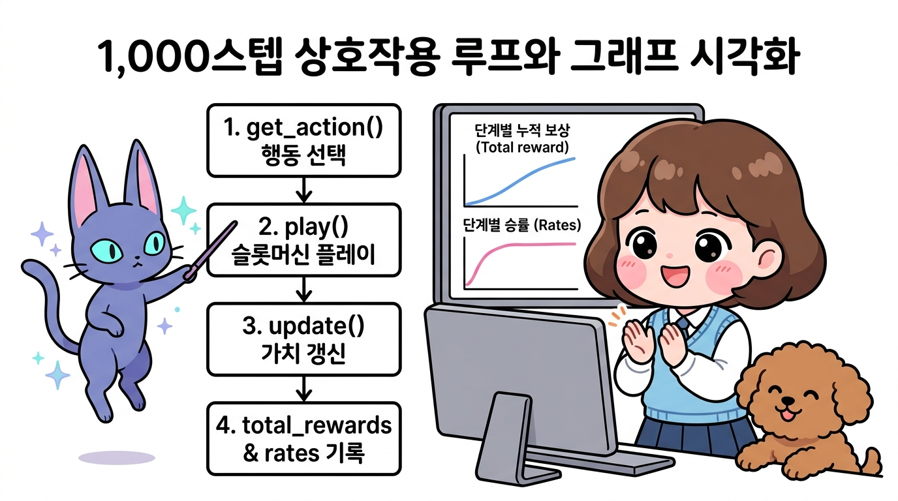
소스 코드: bandit_play.py
import matplotlib.pyplot as plt
import numpy as np
from bandit1 import Bandit
from agent import Agent
# 1. 시뮬레이션 설정 (하이퍼파라미터)
steps = 1000 # 총 플레이 횟수 (1,000단계)
epsilon = 0.1 # 탐색률 ε (10% 확률로 무작위 탐색, 90% 확률로 최고 머신 활용)
# 2. 환경(Bandit: 10대 슬롯머신)과 에이전트(Agent) 인스턴스 생성
bandit = Bandit() # 승률이 무작위로 숨겨진 슬롯머신 환경
agent = Agent(epsilon) # ε-탐욕 정책 기반 강화학습 에이전트
total_reward = 0 # 전체 누적 보상 합계
total_rewards = [] # 각 스텝별 누적 보상 기록 리스트 (그림 3-19)
rates = [] # 각 스텝별 평균 승률 기록 리스트 (그림 3-20)
# 3. 1,000스텝 상호작용 루프 실행
for step in range(steps):
# [1단계] 행동 선택: 에이전트가 ε-탐욕 정책에 따라 슬롯머신(0~9) 번호 선택
action = agent.get_action()
# [2단계] 환경 반응: 선택한 슬롯머신의 레버를 당겨 보상(1: 당첨, 0: 꽝) 획득
reward = bandit.play(action)
# [3단계] 경험 학습: 획득한 보상으로 에이전트의 가치 추정치(Qs) 증분 갱신
agent.update(action, reward)
# [4단계] 통계 기록: 누적 보상 합산 및 현재까지의 승률 계산
total_reward += reward
total_rewards.append(total_reward) # 현재까지의 누적 보상 저장
rates.append(total_reward / (step + 1)) # 현재까지의 승률 저장 (누적 보상 / 현재 스텝)
# 1,000회 플레이 후 총 누적 보상 출력
print(total_reward)
# 4. 그래프 그리기: 단계별 보상 총합(그림 3-19)
plt.ylabel('Total reward')
plt.xlabel('Steps')
plt.plot(total_rewards)
plt.show()
# 5. 그래프 그리기: 단계별 승률(그림 3-20)
plt.ylabel('Rates')
plt.xlabel('Steps')
plt.plot(rates)
plt.show()
출력 결과
859
🐱 지니: “도로시, 1,000번 동안 에이전트가 열심히 탐색하고 학습한 덕분에 무려 850점 이상의 높은 보상을 얻었단다!”
👧 도로시: “와!
total_rewards는 계속 위로 쭉쭉 뻗어 올라가고,rates는 초반에 탐색을 거치더니 가장 승률이 좋은 머신의 승률 근처로 쑥 올라가네요!”🐶 토토: “멍멍! (코드 흐름이 4단계로 한눈에 정리되어 정말 쉬워요!)”
3.4.5.2 에이전트와 환경의 상호작용 3단계
먼저 for 루프 내부에 주목해보죠.
이 영역은 에이전트(Agent)와 환경(Bandit/Environment)이 끊임없이 신호를 주고받으며 학습을 고도화하는 ‘상호작용 루프(Interaction Loop)’입니다.
루프 내부는 다음의 3단계로 구성됩니다:
1단계: 행동 선택 (action = agent.get_action())
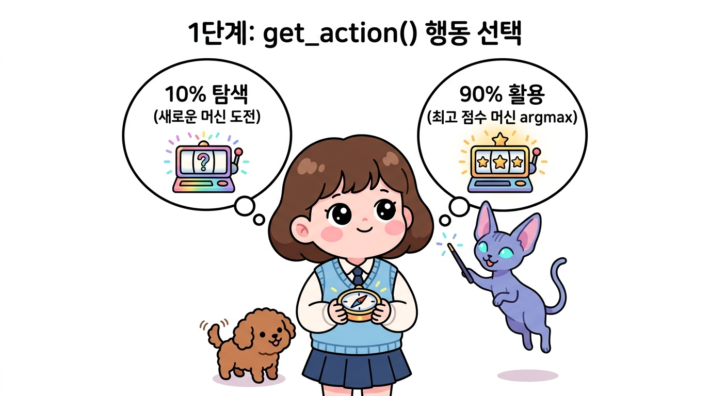
- 원리 및 역할: 에이전트가 ε-탐욕 정책에 따라 현재 시점에서 어떤 슬롯머신을 당길지 결정합니다.
- 동작 방식:
- ε (예: 10%)의 확률로 무작위 탐색(Exploration)을 수행하여 새로운 슬롯머신에 도전합니다.
- 1 - ε (예: 90%)의 확률로 탐욕적 활용(Exploitation)을 수행하여 현재까지 가치 추정치(
self.Qs)가 가장 높은 머신(np.argmax)을 선택합니다.
- 결과: 선택된 머신의 인덱스 번호(
action: 0~9 중 하나)가 반환됩니다.
🐱 지니: “도로시, 주사위를 던져 10%는 새로운 가능성을 찾고, 90%는 최고 머신을 공략하는 지혜로운 결정 단계란다!”
👧 도로시: “상황에 안주하지 않고 가끔 새로운 길을 탐험하는 균형 감각이 핵심이군요!”
2단계: 환경의 반응 및 보상 획득 (reward = bandit.play(action))
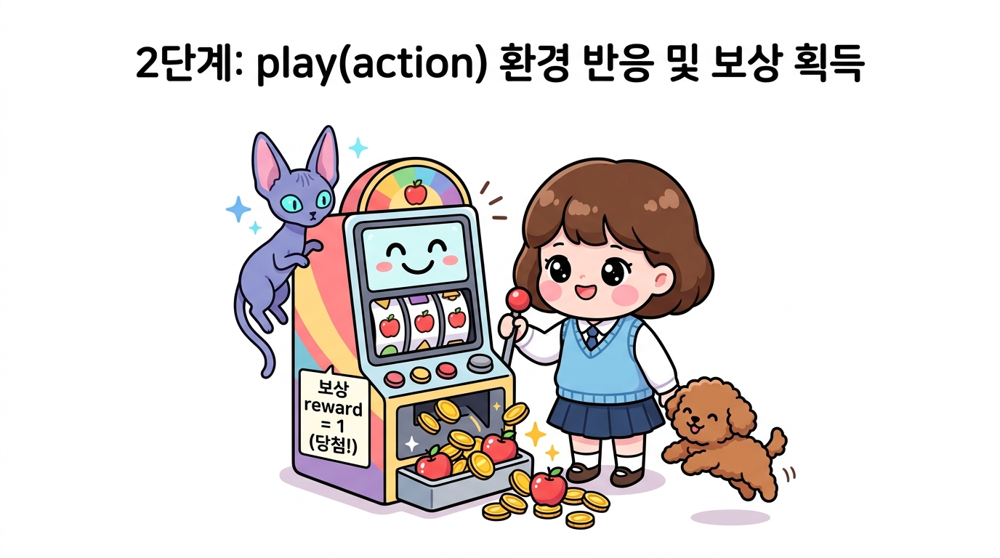
- 원리 및 역할: 에이전트가 선택한 슬롯머신의 레버를 실제로 당겨 환경(슬롯머신)으로부터 결과(보상)를 얻습니다.
- 동작 방식:
- 슬롯머신 환경(
Bandit)은 해당 머신에 숨겨진 고유 승률(rates[action])을 기반으로 난수를 발생시킵니다. - 승리하면
1(황금 코인/사과 당첨), 실패하면0(꽝)의 보상(reward)을 에이전트에게 전달합니다.
- 슬롯머신 환경(
- 결과: 즉각적인 보상 값(
reward: 1 또는 0)이 에이전트에게 주어집니다.
🐱 지니: “슬롯머신은 자신의 속마음(승률)을 직접 알려주지 않고, 오직 ‘당첨(1)’과 ‘꽝(0)’이라는 결과로만 답해준단다!”
👧 도로시: “와! 레버를 당길 때마다 황금 사과가 터져 나오길 기대하는 짜릿한 순간이에요!”
3단계: 가치 추정치 갱신 및 학습 (agent.update(action, reward))
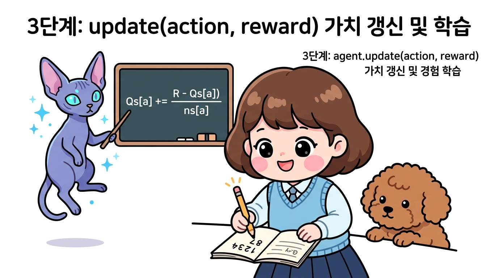
- 원리 및 역할: 방금 얻은 보상 경험을 바탕으로 에이전트의 뇌(가치 추정치 배열
Qs)를 증분 방식으로 똑똑하게 업데이트합니다. - 동작 방식:
- 해당 머신의 누적 플레이 횟수를 1 증가시킵니다 (
self.ns[action] += 1). - 증분 갱신 공식 Q(a) ← Q(a) + (1 / N(a)) × (R - Q(a))에 따라 오차를 반영하여 해당 머신의 가치 추정치를 실시간으로 보정합니다:
self.Qs[action] += (reward - self.Qs[action]) / self.ns[action]
- 해당 머신의 누적 플레이 횟수를 1 증가시킵니다 (
- 결과: 다음 단계에서 더 정확하고 유리한 판단을 내릴 수 있도록 가치 추정치(
self.Qs[action])가 최신 경험으로 갱신됩니다.
🐱 지니: “경험이 쌓일수록 1/n의 크기가 줄어들면서 점수가 안정적으로 진짜 승률에 수렴하게 된단다!”
👧 도로시: “기록하고, 계산하고, 수정하면서 슬롯머신의 비밀 승률을 밝혀내는 진정한 학습의 과정이네요!”
🐶 토토: “멍멍! (행동하고 -> 보상받고 -> 똑똑해지는 완벽한 3박자예요!)”
이 3단계 과정을 1000번 반복 수행하며 각 시점의 보상 총합(total_rewards)과 누적 평균 승률(rates)을 실시간으로 추적하여 학습 추이를 평가합니다.
이 코드를 실행하니 최종적으로 얻은 보상의 총합은 859가 되었습니다(결과는 실행할 때마다 달라집니다). 1000번의 플레이 중 859번 ‘승리’했다는 뜻입니다.
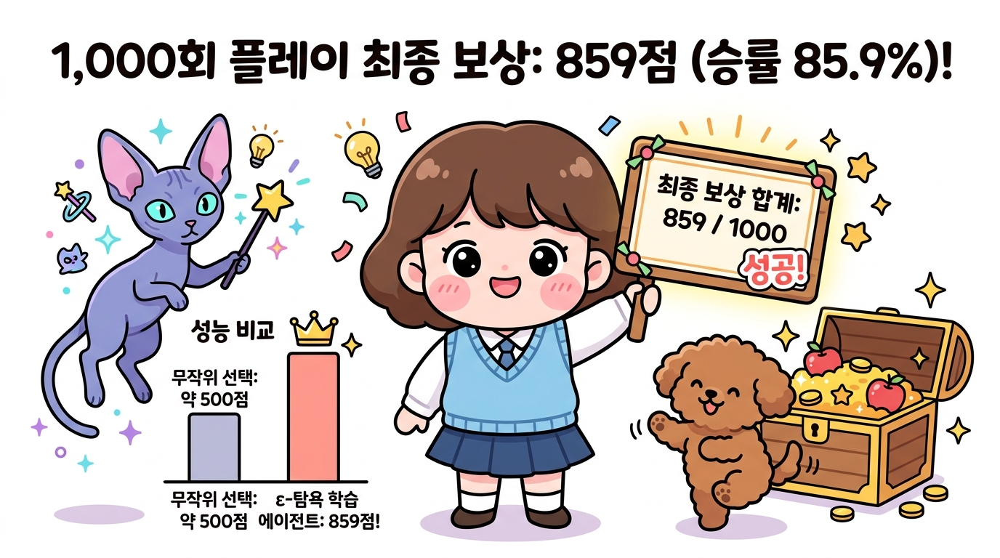
859점 획득이 갖는 놀라운 의미
- 무작위 선택과의 비교: 만약 에이전트가 학습하지 않고 아무 머신이나 무작위로 계속 골랐다면, 10대 머신의 평균 승률(약 50% 가정 시)에 수렴하여 대략 500점 안팎에 머물렀을 것입니다.
- ε-탐욕 학습의 위력: 에이전트는 초반 몇 차례의 탐색(10% 확률)을 통해 10대 중 가장 승률이 높은 최고 머신(승률 약 85~90%)을 빠르게 감지해 냈고, 이후 90%의 시행에서 그 최고 머신을 집중적으로 공략(활용)했기 때문에 무려 859점(승률 85.9%)이라는 압도적인 고득점을 달성할 수 있었습니다.
🐱 지니: “도로시, 10대의 슬롯머신 중 어떤 녀석이 대박 머신인지 전혀 모른 채 시작했는데도, 스스로 탐색하고 학습해서 859점이라는 엄청난 보상을 모아냈단다!”
👧 도로시: “와! 무작위로 당겼을 때(약 500점)보다 훨씬 많은 황금 코인과 사과를 획득했어요! ε-탐욕 알고리즘이 진짜 똑똑하게 작동하는 걸 눈으로 확인하니 신기해요!”
🐶 토토: “멍멍! (보물상자가 넘쳐나요! 대단해요 도로시!)”
3.4.5.3 단계별 보상 총합 결과 분석
참고로 이때 total_rewards의 추이를 그려보니 [그림 3-19]와 같은 결과가 나왔습니다.
그림 3-19 단계에 따른 보상 총합

그래프에서 볼 수 있듯이 단계가 늘어날 때마다 보상의 총합이 꾸준히 증가합니다.
다만 증가 방식의 특징, 예컨대 단계 증가와 보상 증가의 정밀한 관계 같은 정보는 이 그래프만으로는 알아내기 어렵습니다.
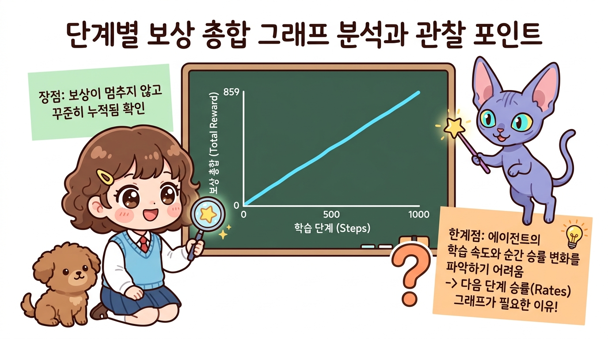
보상 총합 그래프의 특징과 한계점 분석
- 확인할 수 있는 장점:
- 가로축(Steps)이 0에서 1,000으로 진행됨에 따라 세로축(Total reward)이 859까지 꾸준히 우상향합니다.
- 이는 에이전트가 보상을 멈추지 않고 안정적으로 획득하고 있음을 분명하게 보여줍니다.
- 누적 그래프가 갖는 한계점:
- 그래프가 전반적으로 완만한 직선(Linear) 형태를 띠고 있어, “에이전트가 초반 몇 번의 탐색을 거쳤는지”, “언제부터 최적의 슬롯머신을 본격적으로 공략하기 시작했는지”와 같은 학습의 세부적인 질적 변화를 파악하기 어렵습니다.
- 즉, 누적 보상 총합만으로는 에이전트의 순간적인 승률 변화나 학습 속도(수렴 시점)를 정밀하게 평가하기에 한계가 있습니다.
🐱 지니: “도로시, 누적 보상 그래프는 ‘총 얼마나 벌었는가’는 잘 보여주지만, ‘점점 실력이 늘고 있는가’를 세밀하게 들여다보기엔 조금 부족하단다.”
👧 도로시: “맞아요! 돋보기로 들여다봐도 그냥 쭉 뻗은 직선처럼 보여서, 내가 언제 최고의 머신을 찾아냈는지 정확한 시점을 알기 어려워요!”
🐶 토토: “멍멍! (그래서 다음 그래프인 ‘단계별 승률’이 꼭 필요한 거군요!)”
3.4.5.4 단계별 승률 결과 분석
앞의 코드가 생성한 두 번째 그래프인 [그림 3-20]을 살펴보죠.
세로축은 승률입니다.
그림 3-20 단계별 승률

이 그래프를 보면 100단계에서의 승률은 약 0.4입니다.
이를 기준으로 단계를 거듭할수록 승률이 높아지고 있습니다. 초반에 승률이 빠르게 상승하고 500단계를 넘어선 이후에도 완만하게 상승 추세를 이어가고 있습니다. 최종 승률은 0.8이 넘었습니다.
우리가 구현한 ε-탐욕 정책의 학습이 제대로 이루어지고 있는 것으로 보입니다.
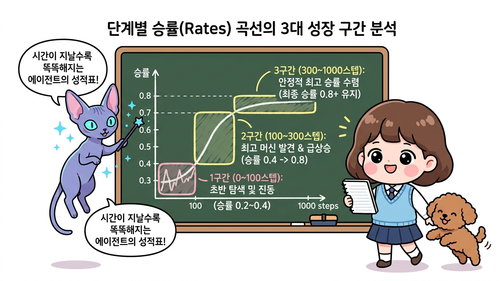
승률 곡선(Learning Curve)의 3대 성장 구간 상세 분석
- 1구간: 초반 탐색 및 진동 구간 (0 ~ 100 단계, 승률 약 0.2 ~ 0.4)
- 10대의 슬롯머신에 대한 사전 정보가 전혀 없기 때문에 에이전트가 주사위를 굴리며 여러 머신을 골고루 찔러봅니다(탐색).
- 이때는 꽝(0)도 많이 겪기 때문에 승률이 낮고 불안정하게 출렁입니다.
- 2구간: 급격한 학습 및 상승 구간 (100 ~ 300 단계, 승률 0.4 → 0.8 급상승)
- 몇 차례의 경험이 쌓이면서 10대 중 승률이 가장 높은 머신의 가치 추정치(
self.Qs)가 다른 머신들보다 확연히 높아집니다. - 에이전트가 (1 - ε)의 높은 확률로 이 최고 머신을 집중 공략(활용)하기 시작하면서 승률이 가파르게 치솟습니다.
- 몇 차례의 경험이 쌓이면서 10대 중 승률이 가장 높은 머신의 가치 추정치(
- 3구간: 안정적 수렴 및 유지 구간 (300 ~ 1,000 단계, 최종 승률 0.8+ 유지)
- 최고 승률 머신에 대한 확신을 바탕으로 500단계를 넘어 1,000단계까지 0.8 이상의 고승률을 든든하게 유지합니다.
- 탐색 확률 ε = 0.1 때문에 가끔(10%) 다른 머신을 시험해보지만, 90%는 검증된 최고 머신을 당기므로 꾸준한 고수익을 확보합니다.
🐱 지니: “도로시, 승률 그래프의 S자 모양 상승 곡선이야말로 ‘에이전트가 경험을 통해 점점 똑똑해졌다’는 가장 명확한 증거란다!”
👧 도로시: “와! 100단계 전에는 주춤하다가, 최고 머신을 알아낸 뒤 0.8 넘게 쑥 치솟는 모습이 마치 내가 시험공부를 마스터하는 과정 같아요!”
🐶 토토: “멍멍! (ε-탐욕 에이전트의 실력이 눈에 띄게 성장했어요!)”
3.4.6 알고리즘의 평균적인 특성
방금 구현한 코드는 실행할 때마다 결과가 달라집니다.
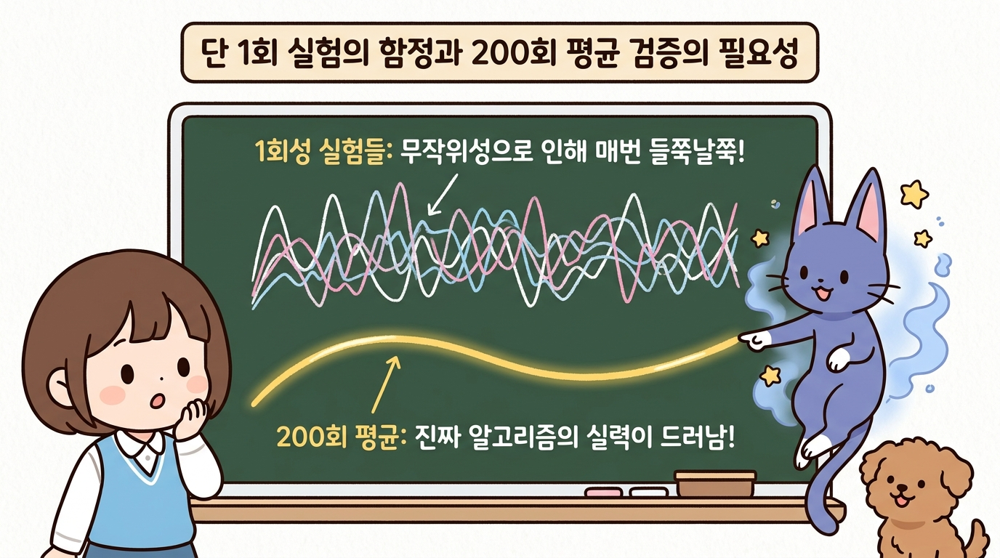
👧 도로시: “어라? 1회차에서는 승률이 0.85까지 쭉쭉 올라갔는데, 2회차에서는 0.6에서 헤매고 있어! 왜 실행할 때마다 결과가 이렇게 들쭉날쭉할까?”
🐱 지니: “강화 학습에는 두 가지 큰 무작위성이 있기 때문이야! 첫째, 슬롯머신들의 승률 배치가 매 실험마다 다르고, 둘째, 에이전트의 ε-탐색과 슬롯머신의 당첨 주사위에도 확률이 개입하거든. 그래서 단 한 번의 실험만 보고 ‘이 알고리즘이 최고야!’라고 결론을 내리면 큰 함정에 빠진단다!”
3.4.6.1 10회 실행을 통한 결과의 무작위성 관찰
예를 들어 [그림 3-20]의 그래프는 실행할 때마다 모양이 크게 달라집니다. 시험 삼아 같은 코드를 10번 실행하고 그 결과를 하나의 그래프로 그려보니 [그림 3-21]와 같았습니다.
그림 3-21 10번의 결과를 한꺼번에 그려보기

이처럼 실험 때마다 결과가 다른 이유는 코드에 무작위성이 포함되어 있기 때문입니다.
무작위성의 2가지 원인과 시드(Seed)
먼저 슬롯머신 10대 각각의 승률을 무작위로 설정했습니다. 그리고 에이전트가 활용한 ε-탐욕 정책에서도 행동을 무작위로 선택했죠. 이러한 무작위성 때문에 매번 결과가 달라질 수 있습니다.
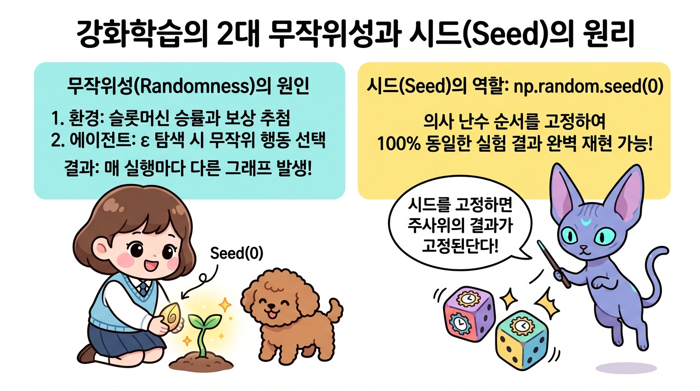
- 환경의 무작위성 (Environment Randomness):
Bandit객체가 생성될 때 10대 슬롯머신의 고유 승률(self.rates)이np.random.rand(10)으로 매번 다르게 무작위 배정됩니다.- 슬롯머신을 플레이할 때도 확률적 주사위(
rate > np.random.rand())에 의해 보상(1 또는 0)이 결정됩니다.
- 에이전트 정책의 무작위성 (Policy Randomness):
Agent의get_action()메서드에서 탐색 확률 ε (10%)에 당첨될 때마다np.random.randint(0, 10)으로 임의의 슬롯머신을 무작위 선택합니다.
🐱 지니: “도로시, 강화학습 세상에는 ‘환경의 우연’과 ‘에이전트의 모험’이라는 2가지 무작위성이 공존한단다. 그래서 단 한 번의 실행 결과만 보고 알고리즘 전체를 평가하면 큰 오판을 할 수 있지!”
👧 도로시: “아하! 마치 마법 주사위를 굴리는 것과 같군요!
np.random.seed(0)으로 주사위의 미래를 똑같이 고정할 수도 있지만, 알고리즘의 진짜 실력을 평가하려면 여러 번 실험해서 평균을 내보는 게 제일 확실하겠네요!”🐶 토토: “멍멍! (다음 절에서 200번 평균을 내보는 이유가 바로 이거였군요!)”
NOTE_ 난수 시드(Seed)의 마법
지금의 무작위성은 코드 실행 시마다 컴퓨터의 ‘시드seed‘가 바뀌기 때문에 생겨납니다. 컴퓨터의 난수는 가짜 난수인 의사 난수(Pseudo-random number)이므로, 코드 맨 위에np.random.seed(0)과 같이 시드 번호를 고정하면 주사위 눈금 순서가 일정해져 언제 실행하든 100% 동일한 실험 결과를 완벽하게 재현할 수 있습니다.
3.4.6.2 알고리즘 평가를 위한 평균 성능 검증의 중요성
강화 학습 알고리즘을 비교할 때 (대부분의 경우) 무작위성 때문에 한 번의 실험만으로 판단하는 건 큰 의미가 없습니다.
그보다는 알고리즘의 ‘평균적인 우수성’을 평가해야 합니다.
같은 실험을 여러 번 반복하여 결과를 평균하는 식으로 알고리즘의 평균적인 우수성을 알 수 있습니다.
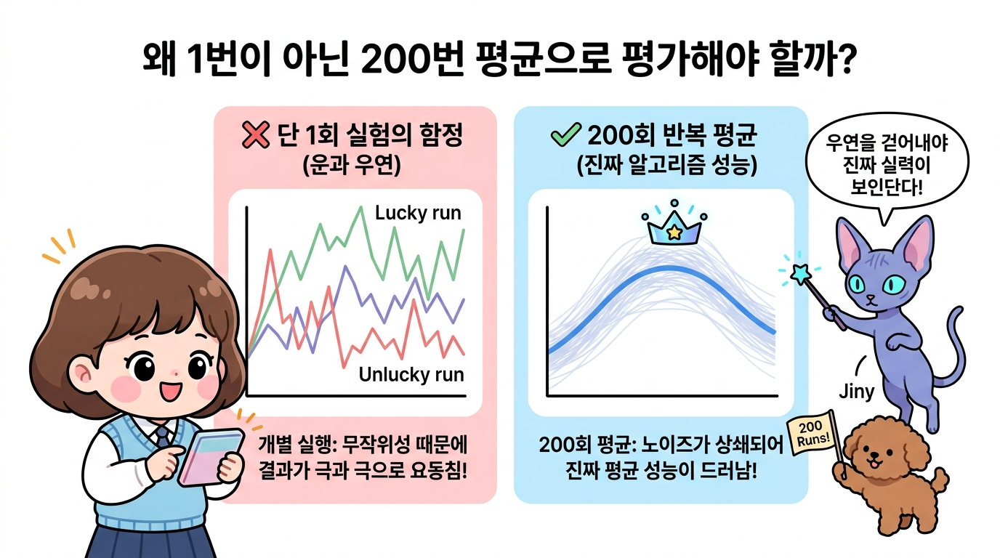
왜 1회가 아닌 ‘200회 반복 평균’이 필수적일까요?
- 단 1회 실험의 함정 (운과 우연의 개입):
- 특정 한 번의 실행에서는 우연히 초반 10스텝 만에 최고 승률 머신을 뽑아 승률이 90% 이상으로 치솟는 ‘운 좋은 판(Lucky run)’이 나올 수 있습니다.
- 반대로, 초반 200스텝 동안 꽝만 계속 나와 최고 머신을 늦게 발견하는 ‘운 나쁜 판(Unlucky run)’도 발생합니다.
- 즉, 단 한 번의 실행 결과는 알고리즘의 진짜 실력이 아니라 단순한 우연(Noise)일 수 있습니다.
- 다중 반복과 평균의 힘 (대수의 법칙):
- 200회처럼 여러 번 독립된 환경에서 동일한 실험을 반복한 뒤 각 스텝별 승률을 평균내면, 개별 시행의 들쭉날쭉한 무작위 노이즈가 서로 상쇄됩니다.
- 그 결과, 알고리즘이 가진 ‘진정한 학습 속도와 평균 기대 승률’이 매끄러운 곡선으로 투명하게 드러납니다.
🐱 지니: “도로시, 주사위를 1번 던져서 6이 나왔다고 ‘이 주사위는 항상 6만 나온다’고 단정할 수 없는 것과 같단다. 수백 번 굴려 평균을 내봐야 진짜 확률을 알 수 있지!”
👧 도로시: “맞아요! 우연한 행운이나 불운에 속지 않고 알고리즘의 진짜 실력을 증명하려면 200번 평균 실험이 꼭 필요하네요!”
🐶 토토: “멍멍! (공정한 평가를 위해 200번 실험을 준비해봐요!)”
3.4.6.3 다중 실행 시뮬레이션 구현 (200회 반복)
그래서 슬롯머신을 1000번 플레이하는 실험을 총 200번 반복하여 평균을 내보겠습니다.
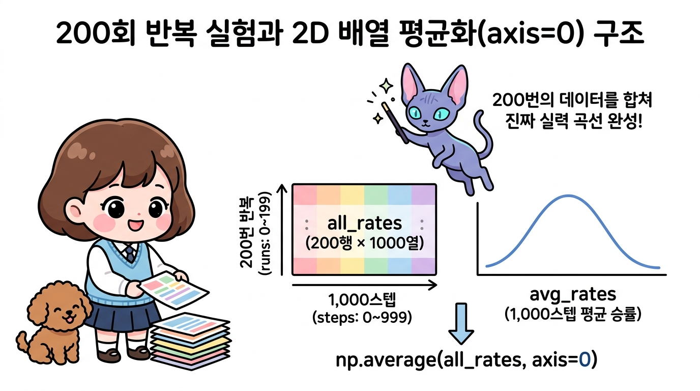
소스 코드: bandit_avg.py
import platform
import numpy as np
import matplotlib.pyplot as plt
from bandit1 import Bandit
from agent import Agent
# 1. 한글 폰트 설정 (OS별 호환성 보장)
system_name = platform.system()
if system_name == 'Darwin': # Mac OS
plt.rc('font', family='AppleGothic')
elif system_name == 'Windows': # Windows OS
plt.rc('font', family='Malgun Gothic')
elif system_name == 'Linux': # Linux OS
plt.rc('font', family='NanumGothic')
plt.rcParams['axes.unicode_minus'] = False # 마이너스 기호 깨짐 방지
# 2. 시뮬레이션 파라미터 설정
runs = 200 # 총 실험 반복 횟수 (200회)
steps = 1000 # 1회 실험당 플레이 횟수 (1,000단계)
epsilon = 0.1 # 탐색률 ε (10% 확률로 무작위 탐색)
# 3. 200번 실험의 1,000스텝 승률을 저장할 2차원 넘파이 배열 생성 (200행 × 1000열)
all_rates = np.zeros((runs, steps))
# 4. 200번 독립적인 시뮬레이션 반복 실행 (외부 루프)
for run in range(runs):
bandit = Bandit() # 매 실험마다 무작위 승률을 가진 새로운 슬롯머신 환경 생성
agent = Agent(epsilon) # 매 실험마다 초기 상태의 새로운 에이전트 생성
total_reward = 0 # 1회 실험의 누적 보상
rates = [] # 1회 실험의 단계별 승률 리스트
# 1,000스텝 상호작용 루프 (내부 루프)
for step in range(steps):
action = agent.get_action() # 1. 행동 선택 (ε-탐욕)
reward = bandit.play(action) # 2. 보상 획득
agent.update(action, reward) # 3. 가치 추정치(Qs) 증분 갱신
total_reward += reward
rates.append(total_reward / (step + 1)) # 현재 스텝까지의 승률 계산
# 1회 실험의 1,000개 승률 데이터를 2차원 배열의 run번째 행에 저장
all_rates[run] = rates
# 5. 200개 실험 결과의 열(axis=0) 방향 평균 계산 -> 1,000스텝의 평균 승률 1D 배열 생성
avg_rates = np.average(all_rates, axis=0)
# 6. 그래프 그리기: 단계별 승률(200번 실험 후 평균)
plt.figure(figsize=(7, 4.5))
plt.ylabel('Rates (승률)')
plt.xlabel('Steps (시행 횟수)')
plt.title('단계별 승률 (200번 실험 후 평균)')
plt.plot(avg_rates, color='#4A90E2', linewidth=2)
plt.grid(True, linestyle='--', alpha=0.5)
plt.tight_layout()
plt.show()
🐱 지니: “도로시, 200번의 독립된 실험을 돌려 (200, 1000) 크기의 거대한 데이터 시트를 만들고,
axis=0으로 세로 평균을 구하면 개별 시행의 운과 불운이 완벽하게 지워진단다!”👧 도로시: “와! 2중 for 루프 안에서 매번 새로운
Bandit()과Agent()를 만들어서 200번 완전히 독립적으로 테스트하니까 정말 공정한 통계가 완성되네요!”🐶 토토: “멍멍! (코드에 주석이 상세해서 2차원 배열과 axis=0 평균화 원리가 한눈에 이해돼요!)”
3.4.6.4 200회 평균 승률 그래프 분석
똑같은 실험을 200번 수행하고 all_rates에 각 실험의 결과를 저장했습니다.
구체적으로 1에서 원소 1000개짜리 배열인 rates를 all_rates의 해당 위치에 저장합니다.
그런 다음 2에서 axis=0으로 지정하면 단계별 평균을 계산합니다.
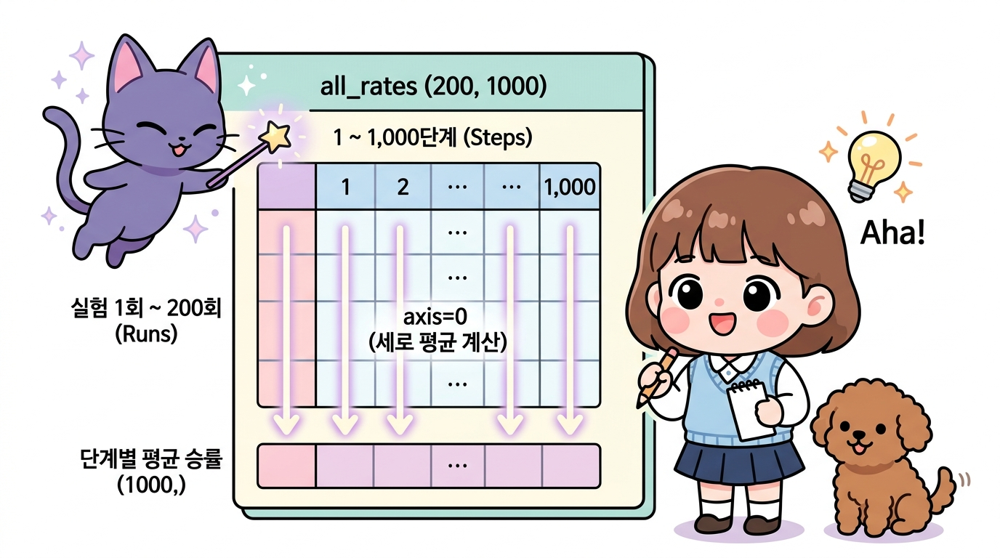
🐱 지니: “
all_rates는 가로 1,000칸(단계별 승률), 세로 200줄(실험 횟수)을 가진(200, 1000)크기의 2차원 행렬이란다. 여기서np.average(all_rates, axis=0)을 실행하면 세로 방향(열 기준)으로 200개의 데이터를 싹 더해 200으로 나누어, 1단계부터 1,000단계까지의 ‘200회 평균 승률’ 1차원 배열(1000,)이 완성되는 거지!”👧 도로시: “와! 세로 방향으로 200번의 독립적인 실험 데이터를 평균 내니까, 운이 좋아서 일찍 대박이 났거나 운이 나빠 헤맸던 개별 실험의 노이즈가 깔끔하게 사라지는군요!”
[그림 3-22]을 보면 계산 과정이 더 명확하게 이해될 것입니다.
그림 3-22 단계별 평균 구하기

📊 200회 평균 승률 곡선이 그리는 3대 학습 단계
앞의 코드를 실행하면 다음 그래프를 얻을 수 있습니다.
그림 3-23 단계별 승률(200번 실험 후 평균)

알고리즘을 평가할 때는 이처럼 평균을 이용해야 합니다.
[그림 3-23]의 그래프를 보면 이번 알고리즘(ε-탐욕 정책)의 특징이 더 잘 드러납니다.
승률이 처음에는 0.5 정도로 시작해서 단계를 거듭할수록 빠르게 높아지고 600단계 정도에 이르러 거의 최대를 찍습니다. 최종적으로 약 0.83을 기록했습니다.
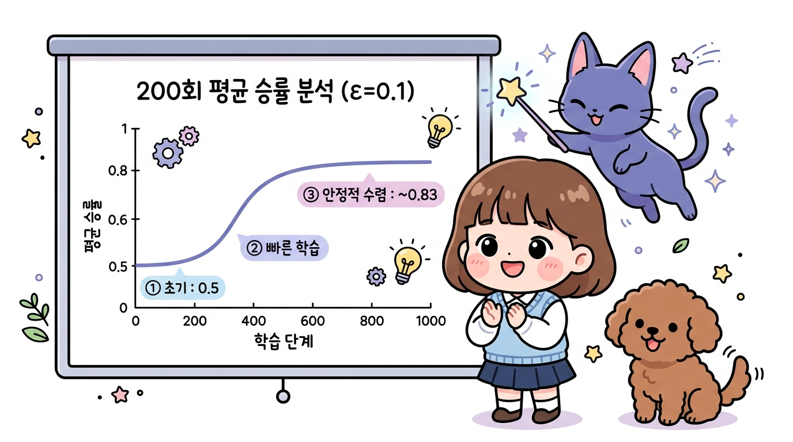
이 매끄러운 200회 평균 승률 곡선은 강화학습 에이전트의 성장 과정을 3개의 핵심 구간으로 선명하게 보여줍니다.
🔍 구간별 상세 분석: 에이전트는 어떻게 똑똑해지는가?
| 학습 구간 | 단계 (Step) | 평균 승률 | 에이전트의 내부 행동 및 상태 변화 |
|---|---|---|---|
| ① 초기 탐색 단계 | 0 ~ 100단계 | 약 0.5 (50%) | • 모든 슬롯머신의 가치 추정치 Q가 0으로 동일 • 10개 머신을 골고루 당겨보며 탐색 • 10개 머신의 실제 승률 평균(0.0~1.0의 균등분포 평균 = 0.5) 부근에서 출발 |
| ② 빠른 학습 단계 | 100 ~ 600단계 | 0.50 ➔ 0.83 급상승 | • 슬롯머신별 보상 경험이 쌓이며 Q 가치 추정치 정밀화 • 보상 확률이 가장 높은 ‘1등 슬롯머신’을 성공적으로 발견 • 90%(1 - ε)의 확률로 1등 머신을 집중적으로 당김(활용 극대화) |
| ③ 수렴 및 안정화 단계 | 600 ~ 1000단계 | 약 0.83 (83%) 수렴 | • 1등 머신 판별이 완료되어 승률 곡선이 안정적인 고원(Plateau) 형성 • ε = 0.1(10%) 탐색 정책으로 인해 약 0.83~0.84의 이론적 최적선에 완벽 수렴 |
💡 왜 최종 승률은 1.0(100%)이나 1등 머신 승률이 아닌 약 0.83일까요?
👧 도로시: “지니님! 600단계 이후에는 에이전트가 1등 머신을 확실히 찾았을 텐데, 왜 승률이 1등 머신의 승률(~0.88)에 도달하지 않고 약 0.83에 멈추나요?”
🐱 지니: “아주 날카로운 질문이야 도로시! 그 이유는 바로 우리가 설정한 탐색 확률 ε = 0.1 (10%) 때문이란다!”
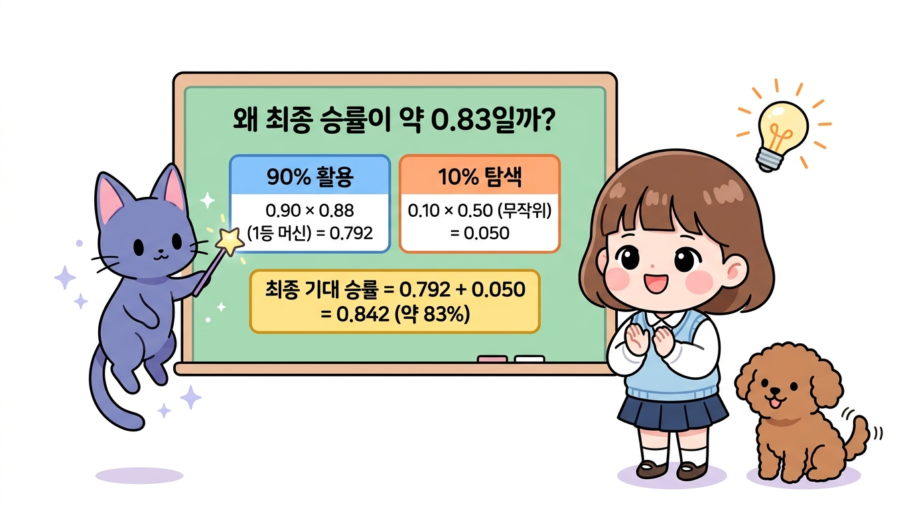
에이전트는 1등 머신을 알아낸 뒤에도 ε-탐욕 정책의 규칙에 따라 다음과 같이 행동합니다.
- 90%의 확률 (1 - ε = 0.90)로 최선 행동(활용):
- 가치 Q가 가장 높은 1등 머신을 선택합니다. (1등 머신의 평균 승률은 약 0.88)
- 10%의 확률 (ε = 0.10)로 무작위 행동(탐색):
- 승률이 0.1이든 0.8이든 상관없이 10개 머신 중 하나를 무작위로 고릅니다. (10개 머신의 전체 평균 승률은 약 0.50)
따라서 에이전트가 1등 머신을 100% 완벽히 찾아낸 상태에서의 이론적 기대 승률은 다음과 같이 계산됩니다.
\[\text{최종 기대 승률} = (0.90 \times 0.88) + (0.10 \times 0.50) = 0.792 + 0.050 = 0.842 \approx 0.83\]이처럼 시뮬레이션 결과로 얻은 0.83이라는 숫자는 에이전트의 ‘학습 부족’ 때문이 아니라, 탐색(ε=0.1)과 활용(1-ε=0.9)의 균형에 따른 정확한 수학적 수렴값입니다.
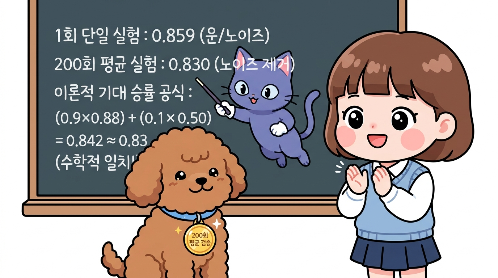
🐶 토토: “멍멍! (1회 실험에서는 운에 따라 0.859도 나오고 0.60도 나왔지만, 200번 평균을 내니 이론적 기대치인 0.83에 정확하게 수렴하는 게 정말 신기해요!)”
3.4.6.5 ε(탐색 확률) 변경에 따른 균형 제어와 성능 비교
참고로 이 결과는 ε-탐욕 정책에서 ε = 0.1로 설정한 결과입니다.
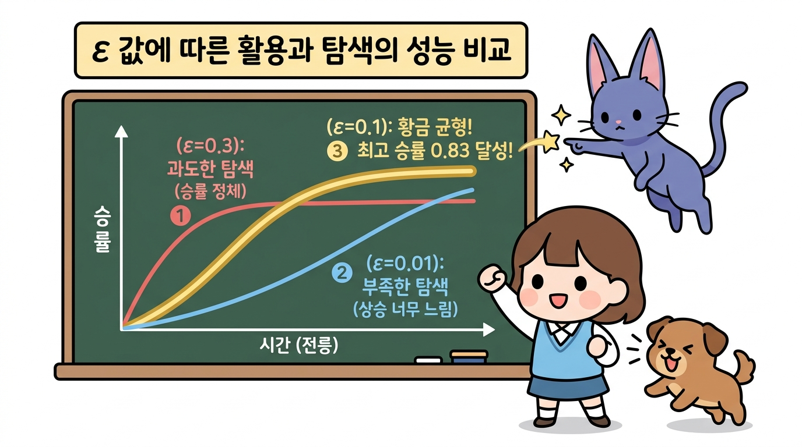
ε-탐욕 변경
ε값을 변경하면 결과도 달라집니다.
실제로 값을 바꿔보죠. ε을 각각 0.01, 0.1, 0.3으로 설정해 실험해보니 결과가 다음과 같았습니다.
그림 3-24 ε-탐욕 정책의 ε값을 바꾼 결과

그림 3-24와 같이 ε의 값에 따라 승률이 달라집니다.
결과를 보면 ε = 0.3이면 승률은 빠르게 상승하지만 400단계를 넘어가면서 상승세가 급격히 꺾입니다.
30%라는 높은 확률로 탐색을 시도하기 때문에 최적의 머신을 선택하는 ‘활용의 비율이 너무 낮기 때문’으로 짐작됩니다. 즉, 탐색을 너무 많이 했다고 볼 수 있습니다.
다음은 ε = 0.01인 경우를 보죠(1% 확률로 탐색). 보상은 꾸준히 상승하지만 상승 속도는 세 가지 중 가장 느립니다.
탐색 비율이 너무 작아서 최적의 머신을 찾을 확률이 낮았기 때문으로 보입니다.
마지막으로 ε = 0.1입니다. 보다시피 결과가 가장 좋습니다. 즉, 탐색 비율을 10%로 할 때의 ‘활용과 탐색의 균형’이 세 가지 중 가장 좋았다고 할 수 있습니다.
| 탐색 확률 | 장점 및 특징 | 단점 및 한계 | 최종 평가 |
|---|---|---|---|
| ε = 0.3 (30% 탐색) | 초반에 다양한 머신을 빠르게 찔러보아 초반 상승 속도가 가장 빠름. | 최고의 머신을 찾은 후에도 30%나 엉뚱한 머신을 탐색하느라 승률이 0.7 부근에서 조기 정체됨. | 과도한 탐색 (낭비 발생) |
| ε = 0.01 (1% 탐색) | 99% 확률로 최고 머신을 활용하므로 안정적. | 탐색 비율이 1%로 너무 작아 진짜 최고 머신을 발견하는 속도가 세 가지 중 가장 느림. | 부족한 탐색 (거북이 학습) |
| ★ ε = 0.1 (10% 탐색) | 적절한 호기심(10%)으로 최고 머신을 신속히 찾고, 90%의 안전한 활용으로 최종 승률 0.83 이상 달성. | 가장 우수한 성능의 황금 균형점 달성. | 최적의 황금 균형 (Best!) |
ε 균형 조절
이처럼 ε의 값으로 ‘활용과 탐색의 균형’을 조절할 수 있습니다.
물론 최적의 ε값은 문제에 따라 달라집니다.
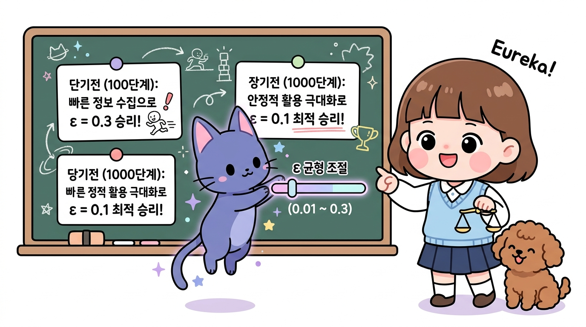
예를 들어 단계 수가 100일 때는 시도한 세 가지 ε 중 ε = 0.3일 때의 결과가 가장 좋았습니다.
이번처럼 ε의 값을 다양하게 시도해보면 최적의 ε값을 찾을 수 있을 것입니다.
⚖️ 문제 상황과 시행 횟수(Horizon)에 따른 최적의 ε 선택 기준
강화학습에서 ε과 같은 핵심 설정값을 하이퍼파라미터(Hyperparameter)라고 부르며, 이를 문제 환경에 맞게 최적화하는 과정을 튜닝(Tuning)이라고 합니다.
| 상황 구분 | 게임/시행 단계 수 (Steps) | 추천 탐색 확률 (ε) | 이유 및 핵심 전략 |
|---|---|---|---|
| 단기전 | 100단계 이하 (시간이 촉박함) | ε = 0.3 ~ 0.5 (높은 탐색) | • 초반에 빠르게 여러 머신을 찔러보아 좋은 머신을 번개처럼 찾아내야 함 • 탐색에 주저하면 좋은 머신을 발견조차 못 하고 시간이 끝남 |
| 장기전 | 1,000단계 이상 (시간이 넉넉함) | ε = 0.05 ~ 0.1 (적절한 탐색) | • 충분한 시간이 있으므로 차분히 최고 머신을 탐색 • 최고 머신을 찾은 후 90~95%의 긴 시간 동안 최고 머신만 집중 활용(Exploitation)하여 누적 점수를 극대화 |
| 실전 고급 전략 | 시간에 따른 점진적 변화 | 감쇠 ε-탐욕 (Decaying ε) | • 초반: ε = 0.5 (호기심 가득하게 탐색) • 후반: ε ➔ 0.01 (탐색을 점차 줄이고 1등 머신만 확정 활용) |
👧 도로시: “아하! 시험 시간이 10분밖에 없을 땐(단기전: 100단계) 빠르게 여러 문제를 훑어보는 ε=0.3이 유리하지만, 시험 시간이 1시간일 땐(장기전: 1000단계) 차분히 좋은 문제를 집중 공략하는 ε=0.1이 최고 점수를 내는 거군요!”
🐱 지니: “정확해 도로시! 강화학습에서는 ‘무조건 하나의 만능 정답 ε‘이 존재하는 것이 아니라, 환경의 복잡도와 주어진 기회(단계 수)에 맞춰 최적의 균형점 ε을 찾는 실험적 탐색이 핵심이란다!”
🐶 토토: “멍멍! (상황에 맞춰 마법 가방의 균형을 조절하는 법을 배웠어요!)”
지금까지 ε-탐욕 정책을 구현해보았습니다.
3.4.7 정리 및 요약
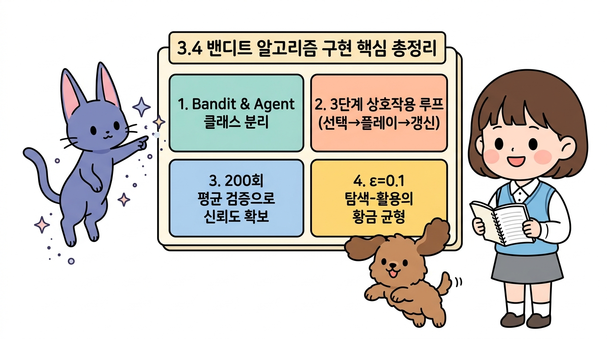
👧 도로시: “지니야! 오늘 슬롯머신 환경과 에이전트를 내 손으로 직접 구현하고, 200회 평균 실험까지 해보니까 강화 학습의 흐름이 정말 선명해졌어!”
🐱 지니: “훌륭해, 도로시! 이론을 코드로 옮기고, 객관적인 몬테카를로 평균 검증으로 알고리즘의 특성을 파악하는 것이야말로 진정한 강화 학습 엔지니어의 핵심 역량이란다!”
🐶 토토: “멍멍! 와프! (도로시와 지니 주위를 신나게 빙글빙글 돌아요!)”
이번 절에서는 앞서 배운 밴디트 알고리즘 이론을 바탕으로 객체 지향적인 파이썬 코드 구현과 성능 평가를 진행했습니다.
요약은 다음과 같습니다.
- 객체 지향 모델링: 10대의 슬롯머신(환경)을
Bandit클래스로, 에이전트(플레이어)의 ε-탐욕 정책을Agent클래스로 코딩하여 강화학습의 문제 영역과 행동 주체를 명확히 객체로 분리하여 구현했습니다. - 에이전트-환경 상호작용 루프: 행동 선택(
get_action()) → 실제로 레버를 당겨 보상 획득(play()) → 보상을 바탕으로 한 가치 추정치 업데이트(update()) 순서로 순환하는 강화학습 상호작용 과정을 구현했습니다. - 평균 검증의 필요성: 무작위성(무작위 슬롯머신 설정, ε 확률에 따른 무작위 행동) 때문에 단 1회의 실험 결과는 신뢰하기 어렵습니다. 알고리즘의 우수성을 공정하게 평가하기 위해 200회 반복 실험 후의 평균 승률 추이를 활용하는 평가 표준을 확립했습니다.
- 활용과 탐색의 균형 조율: 하이퍼파라미터인 탐색 확률 ε의 값에 따라 학습 곡선이 크게 달라집니다.
- ε = 0.3: 빠른 초반 탐색으로 정보를 얻지만, 활용의 비율이 낮아 최종 승률이 수렴 한계에 봉착합니다 (과도한 탐색).
- ε = 0.01: 학습 진행 속도가 너무 더디어 최적의 행동을 찾는 데 시간이 너무 오래 걸립니다 (부족한 탐색).
- ε = 0.1: 세 조건 중 활용과 탐색의 최상의 균형점을 달성하여 가장 우수한 누적 성과를 거두었습니다.